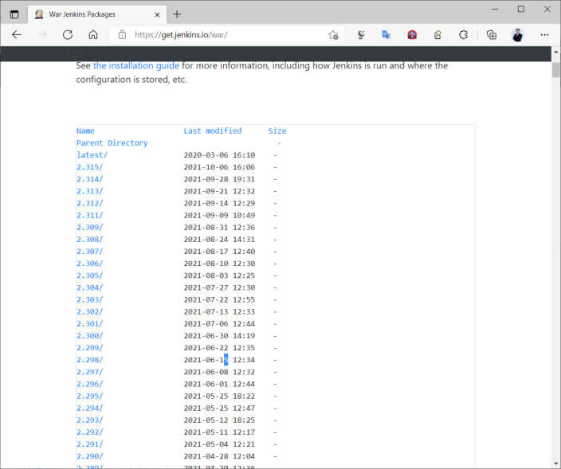
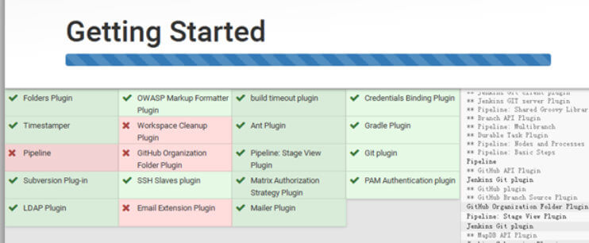
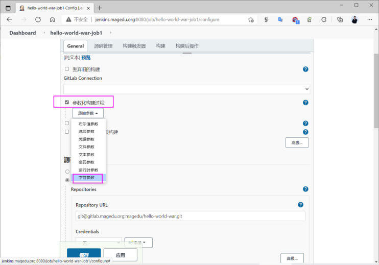
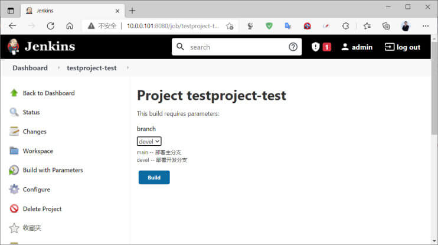
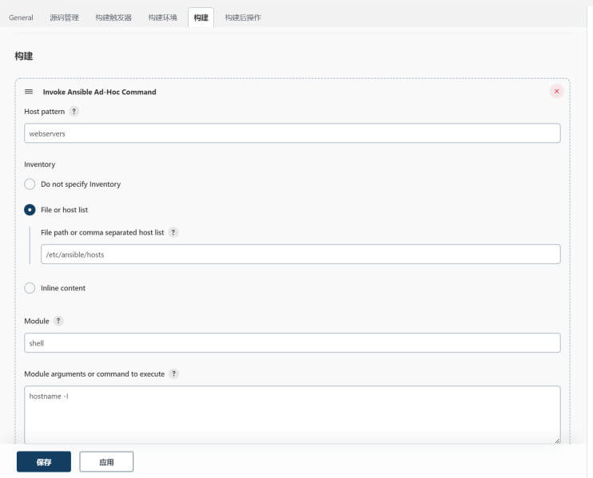
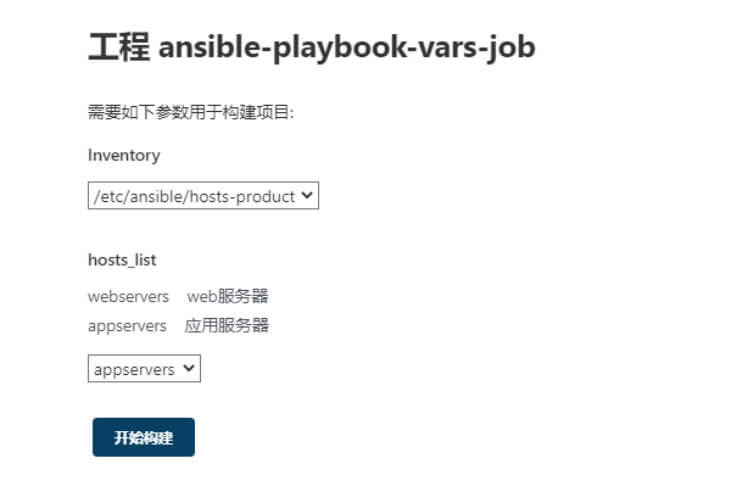
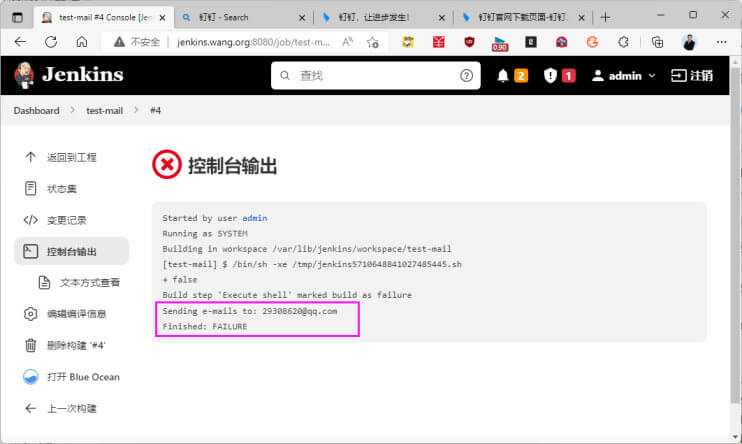

Jenkins 部署与基本配置 Jenkins 介绍
官方网站：
官方文档
1 https://www.jenkins.io/zh/doc/
Jenkins 是基于Java开发的一种开源的CI（Continuous integration，持续集成）&CD (Continuous Delivery，持续交付)工具，其前身是商业软件Hudson
Jenkins 用于监控持续重复的工作，旨在提供一个开放易用的软件平台，使软件的持续集成变成可能。可用于自动化各种任务，如构建，测试和部署软件。
Jenkins 作为一个可扩展的自动化服务器，可以用作简单的 CI 服务器，或者变成任何项目的持续交付中心。
Jenkins 只是一个调度平台，其本身并不能完成项目的构建部署
Jenkins 需要安装各种插件，可能还需要编写Shell，python脚本等才能调用和集成众多的组件来实现复杂的构建部署功能
主要用途：
持续、自动地构建/测试软件项目
监控一些定时执行的任务
Jenkins特点：
开源免费
跨平台，支持所有的平台
master/slave支持分布式的build
web形式的可视化的管理页面
安装配置简单
及时快速的提示和帮助
已有的1800+插件
Jenkins 官方介绍视频
1 https://v.qq.com/x/page/m0509xul0xk.html
Jenkins 版本
1 2 3 https://www.jenkins.io/download/ https://www.jenkins.io/zh/download/ https://mirrors.tuna.tsinghua.edu.cn/jenkins/
Jenkins 项目产生两个发行线， 长期支持版本 (LTS) 和定期发布版本。
1 2 https://get.jenkins.io/ https://mirrors.tuna.tsinghua.edu.cn/jenkins/

Jenkins 安装和启动 Jenkins 的安装 Jenkins 支持多种部署和运行方式
Jenkins支持多种安装方法
1 https://www.jenkins.io/zh/doc/book/installing/
安装前环境准备 系统要求 1 https://www.jenkins.io/doc/administration/requirements/java/
系统要求
最低推荐配置：
256MB可用内存
1GB可用磁盘空间(作为一个Docker容器运行jenkins的话推荐10GB)
为小团队推荐的硬件配置：
JAVA 软件配置：
Java 8/17/21—无论是Java运行时环境（JRE）还是Java开发工具包（JDK）都可以。
Jenkins requires Java 11 or 17 since Jenkins 2.357 and LTS 2.361.1.
系统准备 JAVA 环境
jenkins基于JAVA实现，安装jenkins前需要先安装 JDK
1 2 3 4 5 6 7 8 9 10 11 12 13 14 15 16 17 18 19 20 21 22 23 24 25 26 27 28 [root@ubuntu2004 ~] [root@rocky8 ~] [root@ubuntu1804 ~] [root@ubuntu1804 ~] [root@ubuntu1804 ~] openjdk version "1.8.0_242" OpenJDK Runtime Environment (build 1.8.0_242-8u242-b08-0ubuntu3~18.04-b08) OpenJDK 64-Bit Server VM (build 25.242-b08, mixed mode) [root@ubuntu1804 /usr/local/src] [root@ubuntu1804 /usr/local/src] [root@ubuntu1804 /usr/local/src] [root@ubuntu1804 /usr/local/src] export JAVA_HOME=/usr/local/jdkexport PATH=$JAVA_HOME /bin:$JAVA_HOME /jre/bin:$PATH export CLASSPATH=.$CLASSPATH :$JAVA_HOME /lib:$JAVA_HOME /jre/lib:$JAVA_HOME /lib/tools.jar[root@ubuntu1804 /usr/local/src] [root@ubuntu1804 /usr/local/src] java version "1.8.0_192" Java(TM) SE Runtime Environment (build 1.8.0_192-b12) Java HotSpot(TM) 64-Bit Server VM (build 25.192-b12, mixed mode)
包安装 Jenkins Ubuntu 包安装 Jenkins Ubuntu 安装 Jenkins 官方说明
1 https://pkg.jenkins.io/debian-stable/
安装过程
1 2 3 4 5 6 7 8 9 10 11 12 13 14 15 16 17 18 19 20 21 22 apt -y install openjdk-11-jdk wget -q -O - https://pkg.jenkins.io/debian-stable/jenkins.io.key | sudo apt-key add - Then add the following entry in your /etc/apt/sources.list: deb https://pkg.jenkins.io/debian-stable binary/ Update your local package index, then finally install Jenkins: sudo apt-get update sudo apt-get install jenkins [root@ubuntu2204 ~] 正在列表... 完成 jenkins/binary,now 2.375.2 all [已安装] jenkins/binary 2.375.1 all jenkins/binary 2.361.4 all jenkins/binary 2.361.3 all jenkins/binary 2.361.2 all jenkins/binary 2.361.1 all
deb 包下载地址国内镜像站点
1 2 https://mirrors.aliyun.com/jenkins/debian-stable/ https://mirror.tuna.tsinghua.edu.cn/jenkins/debian-stable/
范例：包仓库安装
1 2 3 4 5 6 7 8 9 curl -fsSL https://pkg.jenkins.io/debian-stable/jenkins.io.key | sudo tee \ /usr/share/keyrings/jenkins-keyring.asc > /dev/null echo deb [signed-by=/usr/share/keyrings/jenkins-keyring.asc] \ https://pkg.jenkins.io/debian-stable binary/ | sudo tee \ /etc/apt/sources.list.d/jenkins.list > /dev/null sudo apt-get update sudo apt-get install jenkins
范例： Ubuntu二进制包安装jenkins
1 2 3 4 5 6 7 [root@ubuntu1804 ~] [root@ubuntu1804 ~] [root@ubuntu1804 ~] [root@ubuntu1804 ~] [root@ubuntu1804 ~] [root@ubuntu1804 ~] 8bdf8b1805cf451084ebebd9083823b1
范例： Ubuntu二进制包安装jenkins 旧版
1 2 3 4 5 6 7 8 9 10 [root@ubuntu1804 ~] [root@ubuntu1804 ~] [root@ubuntu1804 ~] [root@ubuntu1804 ~] [root@ubuntu1804 ~] [root@ubuntu1804 ~] LISTEN 0 50 *:8080 *:* users :(("java",pid=11709 ,fd=164 )) [root@jenkins-ubunutu1804 ~]
CentOS 包安装 Jenkins CentOS 安装jenkins官方说明
1 https://pkg.jenkins.io/redhat-stable/
包仓库安装过程
1 2 3 wget -O /etc/yum.repos.d/jenkins.repo https://pkg.jenkins.io/redhat-stable/jenkins.repo rpm --import https://pkg.jenkins.io/redhat-stable/jenkins.io.key yum install jenkins
rpm包国内镜像下载链接
1 2 https://mirrors.aliyun.com/jenkins/redhat-stable/ https://mirrors.tuna.tsinghua.edu.cn/jenkins/redhat-stable/
范例： CentOS二进制包安装jenkins
1 2 3 4 5 6 7 8 9 10 11 12 13 14 15 16 17 18 19 20 21 22 23 24 25 26 27 28 29 30 31 32 33 34 35 36 37 38 39 40 41 42 43 44 45 46 47 48 49 50 51 52 53 54 55 56 57 58 59 60 61 62 63 64 65 66 67 68 69 70 71 72 73 74 75 76 77 78 79 80 81 82 83 84 [root@centos8 ~] [root@centos8 ~] [root@centos8 ~] [root@centos8 ~] /etc/init.d/jenkins /etc/logrotate.d/jenkins /etc/sysconfig/jenkins /usr/lib/jenkins /usr/lib/jenkins/jenkins.war /usr/sbin/rcjenkins /var/cache/jenkins /var/lib/jenkins /var/log/jenkins [root@centos8 ~] [root@centos8 ~] cf4cd0d45e6041a3ba0dcaec345b105a [root@centos8 ~] cf4cd0d45e6041a3ba0dcaec345b105a [root@centos8 ~] JENKINS_HOME="/var/lib/jenkins" JENKINS_JAVA_CMD="" JENKINS_USER="jenkins" JENKINS_JAVA_OPTIONS="-Djava.awt.headless=true" JENKINS_PORT="8080" JENKINS_LISTEN_ADDRESS="" JENKINS_HTTPS_PORT="" JENKINS_HTTPS_KEYSTORE="" JENKINS_HTTPS_KEYSTORE_PASSWORD="" JENKINS_HTTPS_LISTEN_ADDRESS="" JENKINS_HTTP2_PORT="" JENKINS_HTTP2_LISTEN_ADDRESS="" JENKINS_DEBUG_LEVEL="5" JENKINS_ENABLE_ACCESS_LOG="no" JENKINS_HANDLER_MAX="100" JENKINS_HANDLER_IDLE="20" JENKINS_EXTRA_LIB_FOLDER="" JENKINS_ARGS="" [root@centos8 ~] JENKINS_HOME="/var/lib/jenkins" JENKINS_JAVA_CMD="" JENKINS_USER="jenkins" JENKINS_JAVA_OPTIONS="-Djava.awt.headless=true \ -Dcom.sun.management.jmxremote \ -Dcom.sun.management.jmxremote.port=12345 \ -Dcom.sun.management.jmxremote.authenticate=false \ -Dcom.sun.management.jmxremote.ssl=false \ -Djava.rmi.server.hostname=" 10.0.0.101" \" JENKINS_PORT=" 8080" JENKINS_LISTEN_ADDRESS=" " JENKINS_HTTPS_PORT=" " JENKINS_HTTPS_KEYSTORE=" " JENKINS_HTTPS_KEYSTORE_PASSWORD=" " JENKINS_HTTPS_LISTEN_ADDRESS=" " JENKINS_DEBUG_LEVEL=" 5" JENKINS_ENABLE_ACCESS_LOG=" no" JENKINS_HANDLER_MAX=" 100" JENKINS_HANDLER_IDLE=" 20" JENKINS_ARGS=" " #可选启动参数： JENKINS_JAVA_OPTIONS=" -server -Xms1g -Xmx1g -Xss512k -Xmn1g-XX:CMSInitiatingOccupancyFraction=65 -XX:+UseFastAccessorMethods -XX:+AggressiveOpts -XX:+UseBiasedLocking -XX:+DisableExplicitGC -XX:MaxTenuringThreshold=10 -XX:NewSize=2048M -XX:MaxNewSize=2048M -XX:NewRatio=2 -XX:PermSize=128m -XX:MaxPermSize=512m -XX:CMSFullGCsBeforeCompaction=5 -XX:+ExplicitGCInvokesConcurrent -XX:+UseConcMarkSweepGC -XX:+UseParNewGC -XX:+CMSParallelRemarkEnabled -Djava.awt.headless=true -Dcom.sun.management.jmxremote -Dcom.sun.management.jmxremote.port=12345 -Dcom.sun.management.jmxremote.authenticate=false -Dcom.sun.management.jmxremote.ssl=false -Djava.rmi.server.hostname="10.0.0.101" "
修改 jenkins 服务的用户 默认jenkins服务使用jenkins 帐号启动，将文件复制到生产服务器可能会遇到权限问题，因此修改为root用户
1 2 3 4 5 6 7 8 [root@jenkins-ubunutu1804 ~] JENKINS_USER=root JENKINS_GROUP=root [root@jenkins-ubunutu1804 ~] [root@jenkins-ubunutu1804 ~] root 121354 0.0 0.0 20388 188 ? S 18:22 0:00 ......
一键安装 Jenkins 脚本 1 2 3 4 5 6 7 8 9 10 11 12 13 14 15 16 17 18 19 20 21 22 23 24 25 26 27 28 29 30 31 32 33 34 35 36 37 38 39 40 41 42 43 44 45 46 47 48 49 50 51 52 53 54 55 56 57 58 59 60 61 62 63 64 65 66 67 68 69 70 71 72 73 74 75 76 77 78 79 80 81 82 83 84 85 86 87 #!/bin/bash URL="https://mirrors.tuna.tsinghua.edu.cn/jenkins/redhat-stable/jenkins-2.289.3-1.1.noarch.rpm" GREEN="echo -e \E[32;1m" END="\E[0m" HOST=`hostname -I|awk '{print $1}' ` . /etc/os-release color RES_COL=60 MOVE_TO_COL="echo -en \\033[${RES_COL} G" SETCOLOR_SUCCESS="echo -en \\033[1;32m" SETCOLOR_FAILURE="echo -en \\033[1;31m" SETCOLOR_WARNING="echo -en \\033[1;33m" SETCOLOR_NORMAL="echo -en \E[0m" echo -n "$1 " && $MOVE_TO_COL echo -n "[" if [ $2 = "success" -o $2 = "0" ] ;then ${SETCOLOR_SUCCESS} echo -n $" OK " elif [ $2 = "failure" -o $2 = "1" ] ;then ${SETCOLOR_FAILURE} echo -n $"FAILED" else ${SETCOLOR_WARNING} echo -n $"WARNING" fi ${SETCOLOR_NORMAL} echo -n "]" echo } install_java if [ $ID = "centos" -o $ID = "rocky" ];then yum -y install java-1.8.0-openjdk else apt update apt -y install openjdk-8-jdk fi if [ $? -eq 0 ];then color "安装java完成!" 0 else color "安装java失败!" 1 exit fi } install_jenkins wget -P /usr/local/src/ $URL || { color "下载失败!" 1 ;exit ; } if [ $ID = "centos" -o $ID = "rocky" ];then yum -y install /usr/local/src/${URL##*/} systemctl enable jenkins systemctl start jenkins else apt -y install daemon net-tools || { color "安装依赖包失败!" 1 ;exit ; } dpkg -i /usr/local/src/${URL##*/} fi if [ $? -eq 0 ];then color "安装Jenkins完成!" 0 else color "安装Jenkins失败!" 1 exit fi } start_jenkins systemctl is-active jenkins if [ $? -eq 0 ];then echo color "Jenkins安装完成!" 0 echo "-------------------------------------------------------------------" echo -e "访问链接: \c" ${GREEN} "http://$HOST :8080/" ${END} else color "Jenkins安装失败!" 1 exit fi while :;do [ -f /var/lib/jenkins/secrets/initialAdminPassword ] && { key=`cat /var/lib/jenkins/secrets/initialAdminPassword` ; break ; } sleep 1 done echo -e "登录秘钥: \c" ${GREEN} $key${END} } install_java install_jenkins start_jenkins
基于 WAR 包直接部署 1 https://www.jenkins.io/zh/doc/book/installing/#war%E6%96%87%E4%BB%B6
可以直接下载 war 包，相当于绿色软件，就可以直接使用
下载链接
1 2 https://get.jenkins.io/war-stable/ https://mirrors.tuna.tsinghua.edu.cn/jenkins/war-stable/
范例： 下载最新版
1 2 3 4 5 6 7 [root@ubuntu2204 ~] root@ubuntu2204 ~] [root@ubuntu2204 ~] -rw-r--r-- 1 root root 91M 1月 11 17:54 jenkins.war
基于 Docker 部署 Jenkins 1 2 https://www.jenkins.io/doc/book/installing/docker/ https://www.jenkins.io/zh/doc/book/installing/#%E5%9C%A8docker%E4%B8%AD%E4%B8%8B%E8%BD%BD%E5%B9%B6%E8%BF%90%E8%A1%8Cjenkins
范例
1 2 3 4 5 6 7 8 9 10 11 12 13 14 docker network create jenkins docker run \ --name jenkins-docker \ --rm \ --detach \ --privileged \ --network jenkins \ --network-alias docker \ --env DOCKER_TLS_CERTDIR=/certs \ --volume jenkins-docker-certs:/certs/client \ --volume jenkins-data:/var/jenkins_home \ --publish 2376:2376 \ docker:dind \ --storage-driver overlay2
范例
1 2 3 4 5 6 7 8 9 10 11 12 13 14 15 -d -p 8080:8080 \ -p 50000:50000 \ -v jenkins-data:/var/jenkins_home \ -v /etc/localtime:/etc/localtime:ro \ -v /var/run/docker.sock:/var/run/docekr.sock \ --restart=always \ jenkinsci/blueocean jenkinsci/blueocean容器与Docker守护进程通信，如果jenkinsci/blueocean容器需要实例化其他 Docker容器，则该守护进程是必需的。如果运行声明式管道，其语法包含agent部分用docker;例如，agent { docker {... }}此选项是必需的。
启动 Jenkins 启动 Jenkins 可以通过下面三种方式实现
利用 service 文件启动
利用 jar 命令直接启动
利用 tomcat 启动
通过脚本或service启动 安装和下载相关文件后，可以通过init脚本或service方式直接启动，
包安装后，直接内置service，可以直接启动
1 2 3 4 5 [root@jenkins ~] [root@jenkins ~] 2020-02-11 06:16:25.540+0000 [id =20] INFO hudson.WebAppMain$3
通过 Java 命令直接启动 Jenkins 如果是下载WAR包文件，可以直接使用 java 命令启动
1 2 3 4 5 6 7 8 9 10 11 12 13 14 15 16 17 18 19 20 21 22 23 24 Running from: /usr/share/jenkins/jenkins.war webroot: $user .home/.jenkins Jenkins Automation Server Engine 2.289.2 Usage: java -jar jenkins.war [--option=value] [--option=value] Options: --webroot = folder where the WAR file is expanded into. Default is ${JENKINS_HOME} /war --pluginroot = folder where the plugin archives are expanded into. Default is ${JENKINS_HOME} /plugins (NOTE: this option does not change the directory where the plugin archives are stored) --extractedFilesFolder = folder where extracted files are to be located. Default is the temp folder --daemon = fork into background and run as daemon (Unix only) -Dcom.sun.management.jmxremote \ -Djava.rmi.server.hostname="10.0.0.101 " \ -Dcom.sun.management.jmxremote.port=12345 \ -Dcom.sun.management.jmxremote.authenticate=false \ -Dcom.sun.management.jmxremote.ssl=false \ -jar jenkins-2.138.3.war &
将 WAR 文件放在tomcat进行运行 如果是下载WAR包文件，也可以通过Tomcat 启动。
先安装tomcat，将 jenkins.war配置tomcat的应用目录即可
1 2 3 4 5 6 7 8 [root@rocky8 ~] mkdir : created directory '/home/tomcat' mkdir : created directory '/home/tomcat/.jenkins' [root@rocky8 ~] [root@rocky8 ~] [root@rocky8 ~] dbbff06091f1436e8ada27b26b108856
首次登录 Jenkins页面初始化 首次登录 Jenkins 页面 用浏览器访问： http://jenkins.wang.org:8080/
默认内置用户admin，其密码为随机字符，可以从如下文件中查到密码
1 2 [root@ubuntu1804 ~] 7d19df2dd74b48a9a48e9534456d0c92
输入文件中的密码：
选择安装 Jenkins 插件 因为默认安装插件需要连接国外的网站，会很慢，所以建议选择插件安装，先不安装任何插件，后续做优化配置后再安装会快很多.
选择安装推荐的插件 会安装很慢，可以选择不安装，直接点右上角的X直接完成安装过程，后续再用离线方式安装插件
离线状态
如果显示 jenkins 已离线 ，将/var/lib/jenkins/hudson.model.UpdateCenter.xml文件中的更新检查地址改成国内镜像地址，如清华大学地址，然后重启 jenkins 即可：
1 2 3 https://mirrors.tuna.tsinghua.edu.cn/jenkins/updates/update-center.json https://mirrors.aliyun.com/jenkins/updates/update-center.json https://jenkins-zh.gitee.io/update-center-mirror/tsinghua/update-center.json
范例： 解决离线问题
1 2 3 4 5 6 7 8 9 [root@ubuntu1804 ~] <?xml version='1.1' encoding='UTF-8' ?> <sites> <site> <id >default</id> <url>https://jenkins-zh.gitee.io/update-center-mirror/tsinghua/update-center.json</url> </site> </sites>
插件安装 选无 ，不安装任何插件
如果是选择安装推荐的插件，进入下面页面，安装插件很慢，可以通过下面方法解决
为了解决插件安装慢的解决方式 ，利用清华的jenkins源通过 Nginx 进行 rewrite 或者反向代理，如下：
1 2 3 4 5 6 7 8 9 10 11 12 13 14 15 16 17 18 [root@jenkins-ubuntu ~] 10.0.0.102 updates.jenkins-ci.org updates.jenkins.io [root@ubuntu1804 ~] [root@ubuntu1804 ~] location /download/plugins { proxy_set_header Host mirrors.tuna.tsinghua.edu.cn; proxy_set_header X-Real-IP $remote_addr ; proxy_set_header X-Forwarded-For $proxy_add_x_forwarded_for ; rewrite /download/plugins(.*) /jenkins/plugins/$1 break ; proxy_pass http://mirrors.tuna.tsinghua.edu.cn; } [root@ubuntu1804 ~]
对于 https 可以将上面的update-center.json 文件中updates.jenkins.io 替换为国内镜像站点即可解决
创建 Jenkins 管理员(可选) 用户信息保存在下面目录
系统默认有一个管理员帐号admin，继续即可
也可以新创建一个管理员帐号
也可以选项下面的 使用admin帐号继续
配置 Jenkins URL 保存完成即可
配置完成并登陆 Jenkins 如果没有创建新管理员帐号，界面如下
如果创建新管理员，界面如下
登陆 Jenkins界面 如果没有创建管理员，可以直接使用内置用户 admin 登录
如果创建新的管理员，直接用新管理员登录
Jenkins 基础配置 修改管理员密码
Jenkins 管理工具 jenkins 指供了Web 管理界面，也提供了命令行管理工具
先下载jenkins.cli.jar文件，可以执行下面操作进行管理jenkins
1 2 3 4 5 6 7 8 [root@jenkins ~] [root@jenkins ~] -rw-r--r-- 1 root root 3.4M Oct 16 11:02 jenkins-cli.jar [root@jenkins ~] [root@jenkins ~] [root@jenkins ~]
Jenkins 插件管理及安装 jenkins 本身的功能有限，但是插件丰富，大大扩展了jenkins的功能，当前已有1800+的插件.
要想使用jenkins实现生产需求，就必须安装相应的插件才能实现特定的功能
插件安装目录 1 2 3 4 5 6 7 8 9 10 11 12 13 14 15 16 17 [root@ubuntu1804 ~] ace-editor momentjs ace-editor.jpi momentjs.jpi ant pam-auth antisamy-markup-formatter pam-auth.jpi antisamy-markup-formatter.jpi pipeline-build-step ant.jpi pipeline-build-step.jpi apache-httpcomponents-client-4-api pipeline-github-lib apache-httpcomponents-client-4-api.jpi pipeline-github-lib.jpi authentication-tokens pipeline-graph-analysis authentication-tokens.jpi pipeline-graph-analysis.jpi bouncycastle-api pipeline-input-step bouncycastle-api.jpi pipeline-input-step.jpi branch-api pipeline-milestone-step branch-api.jpi pipeline-milestone-step.jpi build-timeout pipeline-model-api build-timeout.jpi pipeline-model-api.jpi
插件管理 插件安装过程中，如果因为某种原因导致有安装失败的插件，没有关系，可以后期再单独安装

如果因为防火墙等原因导致安装插件失败或者安装插件缓慢，可以通过下面方式配置
方法1: 更改 Jenkins 的镜像源为国内镜像站 修改指向国内的网址
1 2 3 4 5 [root@jenkins ~] [root@jenkins ~] [root@jenkins ~]
将升级站点URL替换成下面国内镜像地址
将升级站点URL替换成下面国内镜像地址，提交后再次安装插件即可
1 2 3 4 5 6 7 #查看镜像源 http://mirrors.jenkins-ci.org/status.html #默认镜像源 https://updates.jenkins.io/update-center.json #国内镜像源 https://mirror.tuna.tsinghua.edu.cn/jenkins/updates/update-center.json https://mirrors.aliyun.com/jenkins/updates/update-center.json
查看镜像状态
修改update site 为
1 https://mirror.tuna.tsinghua.edu.cn/jenkins/updates/update-center.json
在浏览器地址栏输入，点击yes 重启jenkins
1 http://jenkins服务器:8080/restart
方法2: Jenkins 官网或镜像网站下载想要的插件文件，再导入到 Jenkins 中 1 https://plugins.jenkins.io/
国内镜像站点插件下载地址：
1 2 3 4 http://updates.jenkins-ci.org/download/plugins/ https://updates.jenkins.io/download/plugins/ https://mirrors.aliyun.com/jenkins/plugins/ https://mirrors.tuna.tsinghua.edu.cn/jenkins/plugins/
方法3: 离线插件包复制至插件安装目录 可以将其它主机的已安装好的插件打包后，再将之导入到安装插件目录即可
1 2 3 4 [root@jenkins ~] [root@jenkins ~] [root@jenkins ~] [root@jenkins ~]
安装中文插件 插件管理–搜索 chinese – 选中 Location: Chinese (simplified) 进行安装
修改 Jenkins 的启动用户为 root 默认Jenkins以jenkins的用户身份运行，会导致权限受限，可以修改service文件设为root身份运行解决此问题
1 2 3 4 5 6 7 8 9 10 11 12 13 14 [root@jenkins ~] User=root Group=root [root@jenkins ~] [root@jenkins ~] [root@jenkins ~] JENKINS_USER="root"
优化配置 默认只能并行2个任务，建议根据CPU核心数，将执行者数量修改为CPU的核数
管理 jenkins – Configure System
修改为如下
Jenkins 的备份还原 Jenkins的相关数据都是放在主目录中， 将主目录备份即可实现Jenkins的备份，必要时用于还原
另外如果有相关脚本等，也需要进行备份
可以如下查看目录位置
管理Jenkins— Configure System
jenkins 主目录包含以下文件和目录：
1 2 3 4 5 6 7 8 9 10 11 12 13 14 *.xml 需要备份 config-history 需要备份 fingerprints 需要备份 global-build-stats 需要备份 *.key* 需要备份 jobs jobs配置需要备份（config.xml， nextBuildNumber）， builds目录（build logs等）根据需求而定 nodes 需要备份 plugins 需要备份 *.jpi及 *.hpi，可以不备份每个插件子目录，jenkins启动后会更新插件子目录 secrets 需要备份 updates 需要备份 userContent 用户上传内容，可以根据需要备份 users 用户缓存信息，最好备份 logs 插件logs，根据需求而定，可以不备份 monitoring 可以不备份，插件会实时生成监控数据
Jenkins 实现 CICD Jenkins 实现 CICD 说明 任务中构建将程序源码转换成一个可用的目标(target）的过程，该过程可能会包括获取下载源码，解决依赖、编译和打包等环节
目标可以包括库、可执行文件及生成的脚本等，该类文件即是所谓的“制品”，它们通常应该存储于制品库，Nexus就是著名的制品库服务之一
程序员可以在本地进行构建，但基于有标准、统一构建环境的构建系统完成应用程序的构建，能有效确保制品质量
Jenkins虽然可以为构建服务器，但自身并未提供构建工具
Jenkins可以集成用户所需要的大部分主流构建工具
构建工具与源程序的编程语言及工程工具有密切关系，因而，在Jenkins服务器中具体需要安装和集成的构建工具，取决于用户的实际需要
Maven: Java
SBT: Scala
Babel、Browserify、Weboack、Grunt及Gulp等： javascript
Gradle: Java，Groovey和Kotlin等
Jenkins 实现CICD 流程
Jenkins根据业务场景的不同，提供了多种风格的任务，默认是自由风格任务，通过安装插件，还可以支持其它风格的插件
Job的风格分类
自由风格freestyle: 根据内部的配置属性，实现各种场景的风格
流水线 pipeline
Maven 项目
创建 Freestyle 风格的任务 Job Freestyle 风格任务说明
自由风格的任务提供了下面的组成
通用配置：当前任务的基本配置，历史记录、存储数据、认证、存储目录等
源码管理：指定当前任务依赖的代码仓库地址(仓库的分支)
构建触发器：在什么情况下，才会自动执行当前的任务
构建环境：构建过程中，依赖的环境变量等
构建：当前的代码后续操作
构建后动作：构建任务成功后，我们可以做的事情，发送邮件、提交代码标签、触发其他任务、等等
构建支持变量
1 http://jenkins-server:8080/env-vars.html/
构建状态
1 晴雨表主要是针对一个任务的整体执行成功比例来算的。80%成功表示太阳。
Freestyle 风格任务构建流程
新建任务
输入任务名
选择自由风格的软件项目
描述该任务的作用
设置丢弃旧的构建
丢弃旧的构建：构建后的产物，保留多久
条件1：保持构建的天数：当前项目构建的产物最多保留多少天
条件2：保持构建的最大个数：当前项目最多保留多少构建产物，多出的自动删除
源码管理
从gitlab等仓库下载源码
构建触发器
定义自动构建的触发器
构建
构建项目的具体过程，比如： 编译，打包，部署等
构建后操作
构建完成后可以执行的操作，比如，通知或执行其它任务
Jenkins 构建的环境变量 构建时，Jenkins中内置很多变量，可以直接在脚本中灵活调用
环境变量有内置和自定义两种
注意：自定义环境变量与全局环境变量同名时，全局环境变量将被覆盖；这可能会引起错误，必要时，可为自定义环境变量使用固定的前缀，例如“_ _”等
Jenkins提供了多个内置的变量
Jenkins内置的全局环境变量可被所有的pipeline引用，它们以“env.”为前缀
引用全局环境变量格式有三种： ${env.}、$env.和${ENV_VAR_NAME}
自定义变量可以在系统管理–配置系统–全局属性– 环境变量 定义
下面是Jenkins内置的几个常用的环境变量
JENKINS_HOME：Jenkins的家目录
JENKINS_URL：Jenkins服务的URL
JOB_NAME：当前作业的名称
BUILD_NUMBER：构建号，递增的整数值；打包时，经常用作制品名称的一部分
BRANCH_NAME：在多分支pipeline中，需要根据不同的分支施加不同的操作时较为常用
BUILD_URL：当前构建页面的URL，常用于邮件通知中
GIT_BRANCH：基于git拉取的源码进行构建时使用该变量
可以在Jenkins的管理页面查看到内置变量
案例： 创建简单的 Freestyle 任务
如果没有安装相关插件，只有一种”自由风格的任务软件项目可选
查看输出信息，可以看到很多变量
重复上面过程创建多个任务，如下显示
Jenkins 结合 GitLab 实现代码下载 GitLab 创建项目 1 https://gitee.com/lbtooth/wheel_of_fortune.git
导入项目
Jenkins 安装和 Gitlab 相关的插件 只有安装GitLab相关的插件，才能让Jenkins和GitLab相连
在管理插件中搜索需要gitlab的相关插件并安装
选中下面“安装完成后重启Jenkins(空闲时)，自动重启jenkins
Jenkins 服务器创建访问GitLab的凭据 Jenkins 凭证概述
凭证就是认证到某个系统中的认证信息，用于提供对受限资源的访问;
Jenkins所支持的凭证类型如下
用户名和密码(Username with password)
SSH用户名和私钥日(SSH Username with private key)
Github App Secret file: 需要保密的文本文件，保存有Token等信息
Secret text:Token，串需要保密的文本，例如Github的API Token等
Certificate
其它凭证类型还有二进制数据，或者更复杂形式的项目，例如OAuth凭证等;
凭证的作用域决定了它可用的目标范围
系统：作用于Jenkins系统自身，仅可用于系统和后台任务，且一般用于连接到agent节点之上
全局：作用于Jenkins上的所有任务，以确保任务的正常执行
用户：作用于用户级别，仅生效于Jenkins中的线程代表该用户进行身份验证之时;
注意：在Jenkins内部，凭证被存放在JENKINS_ HOME目录下的secrets目录中，请务必确保该目录的访问权限进行了正确的设置
添加基于用户名和密码类型的凭据 如果基于http协议则无需实现ssh key 凭证，而选择添加gitlab用户名和密码的形式
创建基于 ssh key 的凭据 实现jenkins服务器到gitlab服务器的基于密钥的验证，可以让jenkins连接到gitlab执行操作，比如拉取代码
在 Jenkins 服务器上生成 ssh key 1 2 3 4 5 6 7 8 9 [root@jenkins-ubunutu1804 ~] [root@jenkins-ubunutu1804 ~] ssh-rsa AAAAB3NzaC1yc2EAAAADAQABAAABAQC/LAA5tcFrSLye3QE9a+RH8LSYzwewJ4MBSBvVP7pImKMqg21W ozWw56RKqiSsj9ewO8zL43yfAwOjetrKr2Ovbxw9bOaxj0r1CobpXsD5H7pS4Cq0lLJxSmFwCLroz1C9 ecGhBWBmaCbkOaJ0Q6JLTO830w7noTFYZq4/NWTGtE4xpVDDNUFTAS4j4T/0QQF6YvXIqw0EzdKKkuZL w9Rl9f2j7D1eNJX3QyY2LSgxPsXE77PzlKeJue0FKa0JwzNeKNS01rM9ztoc0VQVhxjOgjY+rhoUtBFY wxXQLmwtBq82dh6qVBKrCDpNIPE+XaXFZVMyZ0Ahs3vD2iIP9Xz/ root@jenkins-ubunutu1804
在 Gitlab服务器上用户中关联 Jenkins 生成的ssh 公钥key 新版界面
在GitLab中项目具有访问权限的用户帐号的profile中导入Jenkins的公钥
旧版界面
在 Jenkins服务器上测试 ssh key 测试可以不使用用户名密码后直接获取代码
先在gitlab查看项目的下载地址： git@gitlab.wang.org:testgroup/testproject.git
在jenkins服务器上执行克隆，不再需要用户和密码
1 2 3 4 5 6 7 8 9 10 11 12 13 14 15 16 17 [root@jenkins-ubunutu1804 ~] Cloning into 'testproject' ... remote: Enumerating objects: 9, done . remote: Counting objects: 100% (9/9), done . remote: Compressing objects: 100% (5/5), done . remote: Total 9 (delta 0), reused 9 (delta 0) Receiving objects: 100% (9/9), done . [root@jenkins-ubunutu1804 ~] testproject [root@jenkins-ubunutu1804 ~] testproject/ ├── index.html └── README.md 0 directories, 2 files
在 Jenkins 添加用户名和 private key 类型凭据 虽然 Jenkins 将root用户公钥传给gitlab可以实现从GitLab服务器基于ssh key 克隆项目，但是Jenkins 无法自动获取root用户的私钥，也就无法在直接在Jenkins的项目中直接连接GitLab的仓库
还需要在Jenkins通过将Jenkins的root对应的私钥创建为Jenkins的凭证，以方便后续的连接GitLab使用
新版界面
系统管理 -- 凭据
复制Jenkins服务器root用户之前生成的私钥
1 2 3 4 5 [root@jenkins-ubuntu ~] MIIEowIBAAKCAQEA7i2eeMfdhILDKU9GlNpi9CAH5OAp98wP0/77EfFvHqB7AGCi 7/5jhyT1hUUlP+CS1cw+3bkD+RzBlIh55mKrgBXGBmnea2IfZDtPsQTtiwdDDJkv acgRdQ2rxWet3l7uFSH0wUxjTkKG8ABUSNW1gp9lGTryhsbXZOZRJfKNtjMgKrkE ......
旧版界面
Jenkins-凭据-jenkins-全局凭据-添加凭据
复制root的私钥
1 2 3 4 [root@jenkins-ubunutu1804 ~] MIIEpAIBAAKCAQEAvywAObXBa0i8nt0BPWvkR/C0mM8HsCeDAUgb1T+6SJijKoNt VqM1sOekSqokrI/XsDvMy+N8nwMDo3rayq9jr28cPWzmsY9K9QqG6V7A+R+6UuAq tJSycUphcAi66M9QvXnBoQVgZmgm5DmidEOiS0zvN9MO56ExWGauPzVkxrROMaVQ
添加私钥
Jenkins 任务中使用凭据 创建 Jenkins 任务
使用凭据 使用基于用户和密码的凭据 注意： URL 使用 http 协议
使用基于 SSH Key 的凭据 注意： URL 使用 git 协议，选择上面创建的基于ssh key的凭证
默认会提示下面出错，是因为Jenkins以Jenkins用户身份运行，首次连接Gitlab服务器会弹出未知主机的警告，需要手动添加信任
解决方法：
方法1：在Jenkins服务器上，以切换至jenkins用户，用ssh连接gitlab服务，加入信任主机即可
1 2 3 4 5 6 7 8 [root@jenkins ~] jenkins@ubuntu2204:~$ ssh gitlab.wang.org The authenticity of host 'gitlab.wang.org (10.0.0.200)' can't be established. ED25519 key fingerprint is SHA256:dbmZIUN5Aux8Mc7wJwd++Mmu83UxBdYKjpAlDLx2nuk. This key is not known by any other names Are you sure you want to continue connecting (yes/no/[fingerprint])? yes Warning: Permanently added ' gitlab.wang.org' (ED25519) to the list of known hosts. jenkins@gitlab.wang.org' s password: 无需再输入后面内容直接退出
方法2：将Jenkins服务的启动用修改为root，因为root 之前连接过并信任gitlab服务器
在Jenkins刷新页面后，再次连接后此问题解决
执行任务验证
查看Jenkins工作目录下代码是否拉取成功
1 2 [root@jenkins ~] images index.html js
配置 Jenkins 结合 GitLab 实现自动化前端项目的部署 和回滚 环境准备: 基于前面的 2.3.1 小节在GitLab 提前创建wheel 项目
Jenkins 创建任务
配置 Git 项目地址和凭证 先确认安装gitlab插件
先在gitlab上确认git地址和分支名称
按上面的信息填定Git路径等信息
添加完成的证书没有报错表示认证通过
准备脚本并加入构建任务 1 2 3 4 5 6 7 8 9 10 11 12 13 14 15 16 17 18 19 20 21 22 23 24 25 26 27 28 29 30 31 32 33 34 35 36 37 38 39 40 41 42 43 44 45 [root@jenkins ~] HOST_LIST="10.0.0.102" APP=wheel APP_PATH=/var/www/html DATA_PATH=/opt DATE=`date +%F_%T` deploy for i in ${HOST_LIST} ;do ssh ${i} "rm -rf ${APP_PATH} && mkdir ${DATA_PATH} /${APP} -${DATE} " scp -r * ${i} :${DATA_PATH} /${APP} -${DATE} ssh ${i} "ln -sv ${DATA_PATH} /${APP} -${DATE} ${APP_PATH} " done } rollback for i in ${HOST_LIST} ;do CURRENT_VERSION=$(ssh ${i} "readlink ${APP_PATH} " ) CURRENT_VERSION=$(basename ${CURRENT_VERSION} ) echo ${CURRENT_VERSION} PRE_VERSION=$(ssh $i "ls -1 ${DATA_PATH} | grep -B1 ${CURRENT_VERSION} | head -n1" ) echo ${PRE_VERSION} ssh ${i} "rm -rf ${APP_PATH} && ln -sv ${DATA_PATH} /${PRE_VERSION} ${APP_PATH} " done } case $1 in deploy) deploy ;; rollback) rollback ;; *) echo "Use $0 deploy or rollback" exit ;; esac
在Jenkins中引用脚本
实现部署任务 立即构建
服务器验证数据 1 2 3 4 5 6 7 8 [root@ubuntu2004 ~] images index.html js [root@ubuntu2004 ~] total 12 drwxr-xr-x 3 root root 4096 Jul 26 11:33 ./ drwxr-xr-x 21 root root 4096 Jul 21 14:34 ../ drwxr-xr-x 4 root root 4096 Jul 26 11:33 wheel-2022-07-26_11-33-22/
将代码部署至后端 Web 服务器 先和后端 Web服务器实现基于key验证
1 2 3 4 5 6 7 [root@ubuntu2004 ~] [root@ubuntu2004 ~] root /data/html; [root@ubuntu2004 ~]
访问 Web 服务
修改代码再上传重新构建 1 2 3 4 git clone git@gitlab.wang.org:dev/wheel_of_fortune.git cd wheel_of_fortune/vi index.html git add .;git commit -m '500w' ;git push
重新执行任务，可以看到如下修改后的显示
实现版本回滚任务 新建任务如下，实现回滚功能
只修改构建的shell部分，基它不变
执行任务后，可以查看到 Web页面是否还原为上一个版本
参数化构建 jenkins支持参数化构建，类似于脚本中的参数，可以实现灵活的构建任务
Jenkins 支持多种参数类型，比如:Boolean，Choice选项，Multi_line字符串，字符串，文件类型等
参数类型说明 参数化构建的目标在于为流水线提供基于参数值的灵活构建机制，从而让一个流水线的定义可以适用于多种需求情形
其功能与引用方式与环境变量类似
在触发作业运行之时，需要向各参数赋值
常用的参数类型
凭据参数
字符参数
密码参数
布尔值参数
文件参数
文本参数
运行时参数
选项参数
参数在使用时实际上也表现为变量，可以通过变量的调用方式使用参数
创建包含各种类型参数的任务
文本参数Multi-line String Parameter
字符参数 String Parameter
构建任务执行 shell
1 2 3 4 echo var_boolean=$var_boolean echo var_choice=$var_choice echo var_string=$var_string echo var_multi_string=$var_multi_string
构建
执行结果
1 2 3 4 5 6 7 8 [root@jenkins test-parameter] /var/lib/jenkins/workspace/test-parameter [root@jenkins test-parameter] test.txt [root@jenkins test-parameter] upload
字符参数实现实现不同分支的部署 
范例：脚本
1 2 3 4 5 6 7 8 9 10 11 12 13 14 15 16 17 18 19 [root@jenkins ~] DATE=`date +%F_%T` HOST_LIST="10.0.0.102" DATA_APP_PATH=/data/tomcat/appdir DATA_WEB_PATH=/data/tomcat/webdir TOMCAT_PATH=/var/lib/tomcat9/webapps/hello tar -C $WORKSPACE /src/main/webapp/ -cf hello.tar . for host in $HOST_LIST ;do scp hello.tar $host :${DATA_APP_PATH} /hello-${DATE} .tar ssh $host "systemctl stop tomcat9 && \ mkdir ${DATA_WEB_PATH} /hello-${DATE} && \ tar xf ${DATA_APP_PATH} /hello-${DATE} .tar -C ${DATA_WEB_PATH} /hello-${DATE} && \ rm -f ${TOMCAT_PATH} && \ ln -s ${DATA_WEB_PATH} /hello-${DATE} ${TOMCAT_PATH} && \ systemctl start tomcat9" done
选项参数实现实现不同分支的部署 创建新分支
确认分支创建成功
准备脚本
1 2 3 4 5 6 7 8 9 10 11 12 13 14 15 16 17 18 19 20 21 [root@jenkins-ubuntu ~] [root@jenkins-ubuntu ~] BRANCH=$1 cd /data/git && rm -rf testprojectgit clone -b $BRANCH git@10.0.0.100:testgroup/testproject.git cd testproject case $BRANCH in main) scp -r * 10.0.0.102:/var/www/html/ ;; devel) scp -r * 10.0.0.103:/var/www/html/ ;; *) echo $BRANCH is error ;; esac [root@jenkins-ubuntu ~]
修改原有构建
修改不同分支的代码
1 2 3 4 5 6 7 8 9 10 11 12 13 14 15 16 17 18 19 20 21 22 23 24 25 26 27 28 29 30 31 32 33 34 35 [root@ubuntu1804 testproject] /data/testproject [root@ubuntu1804 testproject] devel * main [root@ubuntu1804 testproject] <h1> index.html v1</h1> <h1> index.html v2</h1> <h1> index.html v3</h1> <h1> index.html v4</h1> [root@ubuntu1804 testproject] [root@ubuntu1804 testproject] [root@ubuntu1804 testproject] [root@ubuntu1804 testproject] Switched to branch 'devel' Your branch is up to date with 'origin/devel' . [root@ubuntu1804 testproject] * devel main [root@ubuntu1804 testproject] <h1> index.html v1</h1> <h1> index.html v2</h1> <h1> index.html v3</h1> <h1> index.html v4-devel <h1> [root@ubuntu1804 testproject] [root@ubuntu1804 testproject] [root@ubuntu1804 testproject]
执行修改过的构建
执行devel分支的构建

选项参数实现不同分支的部署和回滚
范例： 脚本
1 2 3 4 5 6 7 8 9 10 11 12 13 14 15 16 17 18 19 20 21 22 23 24 25 26 27 28 29 30 31 32 33 34 35 36 37 38 39 40 41 42 43 44 45 46 47 48 49 50 51 52 53 54 55 56 57 58 59 60 61 62 63 64 65 66 67 68 69 70 #!/bin/bash PROJECT="testproject" PROJECT_DIR="/data" APPDIR="/data/tomcat/appdir" WEBDIR="/data/tomcat/webdir" WEBAPPS="/data/tomcat/webapps" HOSTS="10.0.0.8" DATE=`date +%F_%H-%M-%S` pull_code rm -rf $WORKSPACE cd ${JENKINS_HOME} /workspace git clone -b $BRANCH git@gitlab.wang.org:testgroup/$PROJECT .git cd ${$WORKSPACE} && \ tar zcf ${PROJECT_DIR} /${PROJECT} -${DATE} .tar.gz ./* } push_code_webservers for host in $HOSTS ;do scp ${PROJECT_DIR} /${PROJECT} -${DATE} .tar.gz $host :${APPDIR} ssh $host "mkdir $WEBDIR /${PROJECT} -${DATE} && \ tar xf ${APPDIR} /${PROJECT} -${DATE} .tar.gz -C $WEBDIR /${PROJECT} -${DATE} && \ systemctl stop tomcat && \ rm -f ${WEBAPPS} /ROOT && \ ln -s ${WEBDIR} /${PROJECT} -${DATE} ${WEBAPPS} /ROOT && \ chown -R tomcat.tomcat $WEBAPPS && \ systemctl start tomcat" done } deploy pull_code push_code_webservers } rollback local current_version previous_version for host in $HOSTS ;do current_version=$(ssh $host "readlink /data/tomcat/webapps/ROOT" ) current_version=`basename $current_version ` previous_version=`ssh $host "ls /data/tomcat/webdir/ | grep -B1 $current_version |head -n1" ` echo $current_version echo $before_version ssh $host "systemctl stop tomcat && \ rm -f ${WEBAPPS} /ROOT && \ ln -s ${WEBDIR} /$previous_version ${WEBAPPS} /ROOT && \ systemctl start tomcat" done } case $OPS in deploy) deploy ;; rollback) rollback ;; *) echo "Usage: `basename $0 ` deploy|rollback" esac
利用 Git Parameter 插件实现拉取指定版本 利用 Git Parameter 插件实现拉取指定 Tag 创建多个tag，并同步到仓库
安装Git Parameter 插件
创建任务
准备Shell 脚本 1 2 3 4 5 6 7 8 9 10 11 12 13 14 15 16 17 18 #!/bin/bash DATE=`date +%F_%T` HOST_LIST="10.0.0.102" DATA_APP_PATH=/data/tomcat/appdir DATA_WEB_PATH=/data/tomcat/webdir TOMCAT_PATH=/var/lib/tomcat9/webapps/hello tar -C $WORKSPACE /src/main/webapp/ -cf hello.tar . for host in $HOST_LIST ;do scp hello.tar $host :${DATA_APP_PATH} /hello-${DATE} .tar ssh $host "systemctl stop tomcat9 && \ mkdir ${DATA_WEB_PATH} /hello-${DATE} && \ tar xf ${DATA_APP_PATH} /hello-${DATE} .tar -C ${DATA_WEB_PATH} /hello-${DATE} && \ rm -f ${TOMCAT_PATH} && \ ln -s ${DATA_WEB_PATH} /hello-${DATE} ${TOMCAT_PATH} && \ systemctl start tomcat9" done
执行构建并验证结果
利用 Git Parameter 插件实现拉取指定 Commit_ID 基于 git 提交的指定的 commit id 拉取代码
安装Git Parameter 插件
创建任务
执行构建
验证结果
实现 Java 应用源码编译并部署 java 程序需要使用构建工具，如: maven，ant，gradle等进行构建打包才能部署，其中maven比较流行
以下以 maven 为例实现 Java 应用部署
部署环境如下
构建基于 Spring Boot 的 JAR 包 JAVA 项目 Gitlab 导入项目 项目链接
1 https://gitee.com/lbtooth/spring-boot-helloworld.git
Jenkins 服务器上安装 maven 和配置镜像加速 1 2 3 4 5 6 7 8 9 10 11 12 13 14 15 16 17 18 19 [root@jenkins ~] [root@jenkins ~] <mirror> <id >nexus-aliyun</id> <mirrorOf>*</mirrorOf> <name>Nexus aliyun</name> <url>http://maven.aliyun.com/nexus/content/groups/public</url> </mirror> </mirrors> [root@jenkins ~] Apache Maven 3.6.0 Maven home: /usr/share/maven Java version: 1.8.0_292, vendor: Private Build, runtime: /usr/lib/jvm/java-8-openjdk-amd64/jre Default locale: en_HK, platform encoding: UTF-8 OS name: "linux" , version: "4.15.0-112-generic" , arch : "amd64" , family: "unix"
Jenkins 全局工具配置 JDK 和 Maven 参考上一步的信息，填写全局工具配置
注意：如果使用Jenkins自动安装指定的版本的相关工具，会将工具安装到$JENKINS_HOME/tools目录下
准备相关脚本 1 2 3 4 5 6 7 8 9 10 11 12 13 14 15 16 17 root@ubuntu2004:/data/jenkins/scripts APP_PATH=/data/spring-boot-helloworld HOST_LIST=" 10.0.0.102 10.0.0.103 " mvn clean package -Dmaven.test.skip=true for host in $HOST_LIST ;do ssh $host killall -9 java &> /dev/null scp target/spring-boot-helloworld-*-SNAPSHOT.jar $host :${APP_PATH} /spring-boot-helloworld.jar ssh $host "nohup java -jar ${APP_PATH} /spring-boot-helloworld.jar &> /dev/null & " & done
在 Jenkins 创建 Jenkins任务
构建并检查结果
构建基于WAR包运行 Tomcat服务器 JAVA 项目 Gitlab仓库中准备 Java 代码 在gitlab新建 java 项目
1 https://gitee.com/lbtooth/hello-world-war.git
导入项目
或者新建项目
1 2 3 4 5 6 7 8 9 10 11 12 13 14 15 16 17 18 19 20 21 22 23 [root@gitlab data] [root@gitlab data] [root@gitlab hello-world-war] [root@gitlab hello-world-war] [root@gitlab hello-world-war] * main [root@gitlab hello-world-war] origin https://gitee.com/lbtooth/hello-world-war.git (fetch) origin https://gitee.com/lbtooth/hello-world-war.git (push) [root@gitlab hello-world-war] [root@gitlab hello-world-war] [root@gitlab hello-world-war] origin git@gitlab.wang.org:testgroup/hello-world-war.git (fetch) origin git@gitlab.wang.org:testgroup/hello-world-war.git (push) [root@gitlab hello-world-war] [root@gitlab hello-world-war] [root@gitlab hello-world-war] [root@gitlab hello-world-war]
安装 tomcat 服务器和配置 部署java应用至tomcat服务器，并需要提前创建用户和授权
web服务为tomcat服务器，目录结构规划如下
1 2 3 /data/tomcat/appdir /data/tomcat/webdir /data/tomcat/webapps
范例：二进制安装tomcat并配置
1 2 3 4 5 6 7 8 9 10 11 12 13 14 15 16 17 18 19 20 21 22 23 24 25 参考tomcat章节，略 [root@centos8 ~] <!-- <Valve className="org.apache.catalina.valves.RemoteAddrValve" allow="127\.\d+\.\d+\.\d+|::1|0:0:0:0:0:0:0:1" /> --> [root@centos8 ~] <role rolename="manager-gui" /> <role rolename="manager-script" /> <user username="tomcat" password="tomcat" roles="manager-gui,manager-script" /> </tomcat-users> [root@centos8 ~] [root@jenkins ~] 10.0.0.8 web01.wang.org 10.0.0.18 web02.wang.org
范例: Ubuntu2004 apt 安装tomat9和配置
1 2 3 4 5 6 7 8 9 10 11 12 13 14 15 16 17 18 19 20 21 22 23 24 25 26 27 28 29 [root@ubuntu2004 ~] [root@ubuntu2004 ~] openjdk version "11.0.15" 2022-04-19 OpenJDK Runtime Environment (build 11.0.15+10-Ubuntu-0ubuntu0.20.04.1) OpenJDK 64-Bit Server VM (build 11.0.15+10-Ubuntu-0ubuntu0.20.04.1, mixed mode, sharing) [root@ubuntu2004 ~] [root@ubuntu2004 ~] <!-- <Valve className="org.apache.catalina.valves.RemoteAddrValve" allow="127\.\d+\.\d+\.\d+|::1|0:0:0:0:0:0:0:1" /> --> [root@ubuntu2004 ~] <role rolename="manager-gui" /> <role rolename="manager-script" /> <user username="tomcat" password="tomcat" roles="manager-gui,manager-script" /> </tomcat-users> [root@ubuntu2004 ~]
Jenkins 安装 Maven 和 Tomcat 插件 Maven 插件实现Maven风格的任务
Deploy to container 插件实现连接 tomcat
Jenkins 服务器上安装 maven 和配置镜像加速 1 2 3 4 5 6 7 8 9 10 11 12 13 14 15 16 17 18 19 [root@jenkins ~] [root@jenkins ~] <mirror> <id >nexus-aliyun</id> <mirrorOf>*</mirrorOf> <name>Nexus aliyun</name> <url>http://maven.aliyun.com/nexus/content/groups/public</url> </mirror> </mirrors> [root@jenkins ~] Apache Maven 3.6.0 Maven home: /usr/share/maven Java version: 1.8.0_292, vendor: Private Build, runtime: /usr/lib/jvm/java-8-openjdk-amd64/jre Default locale: en_HK, platform encoding: UTF-8 OS name: "linux" , version: "4.15.0-112-generic" , arch : "amd64" , family: "unix"
Jenkins 全局工具配置 JDK 和 Maven 参考上一步的信息，填写全局工具配置
注意：如果使用Jenkins自动安装指定的版本的相关工具，会将工具安装到$JENKINS_HOME/tools目录下
创建 Tomcat 的全局凭据 根据tomcat的用户权限配置，创建jenkins连接tomcat的用户和权限
创建 Maven 风格的任务
输入maven的编译选项
1 clean package -Dmaven.test.skip=true
Context path 如果不指定，则由war的文件名决定访问目录，可以指定为ROOT，则表示访问路径为网站的根
构建验证
实现 Golang 应用源码编译并部署 安装 Golang 环境 1 2 3 4 5 6 [root@ubuntu2004 ~] [root@ubuntu2004 ~] go version go1.13.8 linux/amd64
准备 Golang 源代码 下载: https://gitee.com/lbtooth/http_demo_go.git
1 2 3 4 5 6 7 8 9 10 [root@ubuntu2004 ~] [root@ubuntu2004 data] https://gitee.com/lbtooth/ http_server_demo.git [root@ubuntu2004 data] [root@ubuntu2004 http_demo_go] /data/http_demo_go [root@ubuntu2004 http_demo_go] go.mod hello.html main.go
Gitlab 创建项目
将源码上传到 GitLab 生成ssh密钥并上传到GitLab 1 2 3 4 5 6 7 8 9 10 [root@ubuntu2004 ~] [root@ubuntu2004 ~] ssh-rsa AAAAB3NzaC1yc2EAAAADAQABAAABgQDX28R1iOKyGgZmD+OGXRJ//2zxqxYvw8vftHxeQlL8rzNzMV0k d5CoklpDdS+Xeds+IssV/jApwLKJIqWZoQ/RCYTCPpAVLsSknO9o4yiovGcRHe9NzEYcqnK7LSjwuIvx JMu6T3TpBDp/EARN16WFeqKRDtUnSDu+U1PLawSUN9Ye7OQv+oADmrAvX8TuOmGRy9QqjflWIzvfJw3B rDAfP0EAwHYCNUPZbDtfIn1kJvaNTTOjWdqH2TqBmabVnTawN8B+nqwosUJp5h/4Y+B9qdRTlpmzdZtg ZUiHf2vy/LkVeoNd6i892AxepFnSwMZooUW7ByMA6uKuZRPDrwz0Lo9zQNt4BE5MoikuaqHvfsw408B4 wF9e/l3o2lOu+MQ9im544G4C7Tudo669b/Jva4fzu40L/EORohXOx1r4kzC5i2yywo2SQPB/nZSU/2u6 7TFsMDv+5Fi4vVO0P/Zpl0PEJEcmo87/CnhVqnh00FknXtVJyIAilH2Te+oVojk=
将 ssh 的 公钥上传到 GitLab
上传代码到 GitLab 1 2 3 4 5 6 7 [root@ubuntu2004 http_demo_go] [root@ubuntu2004 http_demo_go] [root@ubuntu2004 http_demo_go] [root@ubuntu2004 http_demo_go] [root@ubuntu2004 http_demo_go] [root@ubuntu2004 http_demo_go] [root@ubuntu2004 http_demo_go]
编写 Shell 脚本 范例: http_demo项目
1 2 3 4 5 6 7 8 9 10 11 12 13 14 15 16 17 18 19 20 21 22 23 24 25 26 27 [root@jenkins ~] APP=http_server_demo APP_PATH=/data DATE=`date +%F_%H-%M-%S` HOST_LIST=" 10.0.0.102 10.0.0.103 " build export GOCACHE="/root/.cache/go-build" export GOPATH="/root/go" export GOPROXY="https://goproxy.cn,direct" go build -o ${APP} } deloy for host in $HOST_LIST ;do ssh $host "mkdir -p $APP_PATH /${APP} -${DATE} " scp -r hello.html ${APP} $host :$APP_PATH /${APP} -${DATE} / ssh $host "killall -0 ${APP} &>/dev/null && killall -9 $APP ;rm -f ${APP_PATH} /${APP} && \ ln -s ${APP_PATH} /${APP} -${DATE} ${APP_PATH} /${APP} ; \ cd ${APP_PATH} /${APP} / && ./${APP} " & done } build deloy
范例: ginweb 项目
1 2 3 4 5 6 7 8 9 10 11 12 13 14 15 16 17 18 19 20 21 22 23 24 25 26 27 28 #!/bin/bash APP=ginweb APP_PATH=/data DATE=`date +%F_%H-%M-%S` HOST_LIST=" 10.0.0.102 " build export GOCACHE="/root/.cache/go-build" export GOPATH="/root/go" export GOPROXY="https://goproxy.cn,direct" CGO_ENABLED=0 go build -o ${APP} } deloy for host in $HOST_LIST ;do ssh $host "mkdir -p $APP_PATH /${APP} -${DATE} " scp -r * $host :$APP_PATH /${APP} -${DATE} / ssh $host "killall -0 ${APP} &> /dev/null && killall -9 ${APP} ; rm -f ${APP_PATH} /${APP} && \ ln -s ${APP_PATH} /${APP} -${DATE} ${APP_PATH} /${APP} ; \ cd ${APP_PATH} /${APP} / && nohup ./${APP} &>/dev/null" & done } build deloy
创建 Jenkins 任务
执行任务
验证服务 访问服务器的链接，验证是否能正常访问
1 2 3 http://10.0.0.102:9999/hello http://10.0.0.102:9999/world http://10.0.0.102:9999/info
集成 Ansible 的任务构建
官方参考
1 https://plugins.jenkins.io/ansible/
安装 Ansible 环境 1 2 3 4 5 6 7 8 root@jenkins ~] [root@jenkins ~] ansible 2.9.6 config file = /etc/ansible/ansible.cfg configured module search path = ['/root/.ansible/plugins/modules' , '/usr/share/ansible/plugins/modules' ] ansible python module location = /usr/lib/python3/dist-packages/ansible executable location = /usr/bin/ansible python version = 3.8.10 (default, Jun 22 2022, 20:18:18) [GCC 9.4.0]
安装 Ansible 插件
安装插件后，添加了ansible的构建步骤
使用 Ansible Ad-Hoc 实现任务 
使用 Ansible Playbook 实现任务 准备 Playbook文件 1 2 3 4 5 6 7 8 9 10 11 12 [root@jenkins ~] - hosts: webservers remote_user: root tasks: - name: excute cmd shell: cmd: hostname -I register: result - name: show result debug: msg: "{{ result }}"
创建任务
使用 Ansible Playbook 实现参数化任务 上面的任务是固定的，不灵活，利用参数在同一个任务就可以灵活实现测试和生产多套不同环境的部署
准备Playbook文件 1 2 3 4 5 6 7 8 9 10 11 12 [root@jenkins ~] - hosts: webservers remote_user: root tasks: - name: excute cmd shell: cmd: hostname -I register: result - name: show result debug: msg: "{{ result }}"
准备两个主机清单文件 1 2 3 4 5 6 7 [root@jenkins ~] [webservers] 10.0.0.102 [root@jenkins ~] [webservers] 10.0.0.103
创建参数化任务
执行任务
使用 Ansible Playbook 实现向 Playbook 中传参功能 编写Playbook文件 1 2 3 4 5 6 7 8 9 10 11 12 13 [root@jenkins ~] - hosts: "{{ ansible_hosts }}" remote_user: root tasks: - name: excute cmd shell: cmd: hostname -I register: result - name: show result debug: msg: "{{ result }}"
创建主机清单文件 1 2 3 4 5 6 7 8 9 10 11 12 13 [root@jenkins ~] [webservers] 10.0.0.104 [appservers] 10.0.0.106 [root@jenkins ~] [webservers] 10.0.0.105 [appservers] 10.0.0.107
创建 Ansible Playbook 的任务 创建任务
添加第一个参数选项
添加第二个参数选项
点”高级”添加ansible的变量，添加Ansible Playbook的变量
注意: 此处的Extra Variables 指的是ansible的变量
key为ansible Playbook的变量名
Value可以是固定值，或者是任务中的变量(需要用${变量名}形式)
如下配置相当于: ansible-playbook -e “ansible_hosts=${hosts_list}”
执行构建

查看结果
构建后通知 Jenkins通知可以将任务的执行状态、事件或信息推送给相关用户，这些通常发生在pipeline的“构建后处理(post-processing)”时期
Email是 Jenkins 内置支持的通知方式，它也能够通过 webhook 扩展支持其它的即时通信媒介，例如:钉钉，Slack等;
邮件通知 Mailer 和 Email Extension 插件都可以实现邮件通知功能，以下以mailer插件为例
生成邮箱登录授权码 可以使用QQ或163邮箱等
安装 mailer 插件 先安装mailer插件后才可以显示和配置发件配置信息
配置 Jenkins管理员邮箱 注意:必须指定系统管理员邮件地址 才能实现邮件通知
Jenkins—系统管理—系统设置：
注意：系统管理员邮件地址，必须和下面SMTP的用户名相同
配置发送邮件的邮件通知 Jenkins—系统管理—系统设置：
注意:必须安装插件才能出现下面的SMTP配置
配置邮件通知信息如下:
用户名必须要和上面的系统管理员邮件地址相同
用户默认邮件后缀可为空
启用”使用SSL协议”
SMTP 端口可以为空，默认为465
Reply-To Address 可以为空
测试配置，确认能否收到邮件
配置任务的构建后通知 选中“每次不稳定的构建都发送邮件通知”，表示只有失败构建时才会发邮件通知
默认不选，成功和失败都会发送
执行任务验证结果 注意:当任务执行失败时才会收邮件

在 Pipeline 中也可以添加邮件通知 范例:
1 2 3 4 5 6 7 8 9 10 11 12 13 14 15 16 17 18 19 20 21 22 23 24 25 26 27 28 29 30 31 32 pipeline { agent any stages { stage('Source' ) { steps { git branch: 'main' , credentialsId: '95b957c7-d786-46c9-9d76-b767121d1c85' , url: 'git@10.0.0.100:testgroup/spring-boot-helloworld.git' } } stage('Build' ) { steps { sh 'mvn clean package -Dmaven.test.skip=true' } } stage('Test' ) { steps { echo "Test" } } stage('Deploy' ) { steps { echo "Deploy" } } } post { always { mail to:"root@wangxiaochun.com" , subject:"Status of pipeline: ${currentBuild.fullDisplayName} " , body:"${env.BUILD_URL} has result ${currentBuild.result} " } } }
邮件内容
钉钉通知 插件说明
1 2 https://jenkinsci.github.io/dingtalk-plugin/ https://jenkinsci.github.io/dingtalk-plugin/guide/getting-started.html
钉钉配置群聊机器人 注册钉钉，创建群聊
指定群类型—内部项目群
选择归属企业和添加相关人员到群里
指定群助手
添加机器人
指定机器人类型为webhook
1 2 SEC9f06df8a086c4efdb58cb7753e836fcfb638fb0297a57bc2f5d9232a3fc86bc9
1 2 https://oapi.dingtalk.com/robot/send?access_token=3ca57ace4ed34f0803599637c5cd932eb3491a16ef7ace06b99a6e3e465609f5
Jenkins 安装 DingTalk 插件
Jenkins 系统配置 新版配置
Manage Jenkins –> 钉钉
旧版配置 管理
Jenkins — configure system
输入webhook链接和加签信息
测试查看钉钉收到消息
配置任务实现钉钉通知 创建新的任务，使用钉钉通知
手机号支持多个，每个手机号一行，也可选 atall 即所有群里的人员(不必再输入手机号)
自定义内容需要使用Markdown格式，比如:
1 2 3 - 构建ID: ${BUILD_ID} - 部署项目: ${JOB_NAME} - 部署目录: ${WORKSPACE}
注意：安装插件后有时会出现以下问题无法正常显示
执行任务验证钉钉通知 如果任务成功，显示下面提示
注意： 如果不成功，重启 jenkins服务，再尝试执行构建
如果失败，显示下面提示
Pipeline 实现钉钉通知 官方说明
1 https://jenkinsci.github.io/dingtalk-plugin/guide/pipeline.html
范例：
1 2 3 4 5 6 7 8 9 10 11 12 13 14 15 16 17 18 19 20 21 22 23 24 25 26 27 28 29 30 31 32 33 34 35 36 37 38 39 40 pipeline { agent any stages { stage('Source' ) { steps { echo "Source" } } stage('Build' ) { steps { echo "Build" } } stage('Test' ) { steps { echo "Test" } } stage('Deploy' ) { steps { echo "Deploy" } } } post { always { dingtalk( robot: 'dingtalk' ,type : "MARKDOWN" , text: [ "# ${JOB_NAME} 完成" , "- Status of pipeline: ${currentBuild.fullDisplayName} " , "- ${env.BUILD_URL} has result ${currentBuild.result} " ], at: [ 'wangxiaochun' ] ) } } }
范例: pipeline实现钉钉通知
1 2 3 4 5 6 7 8 9 10 11 12 13 14 15 16 17 18 19 20 21 22 23 24 25 26 27 28 29 30 31 32 33 34 35 36 37 38 39 40 41 42 43 44 45 46 pipeline { agent any stages { stage('Source' ) { steps { git branch: 'main' , credentialsId: '95b957c7-d786-46c9-9d76-b767121d1c85' , url: 'git@10.0.0.100:testgroup/spring-boot-helloworld.git' } } stage('Build' ) { steps { sh 'mvn clean package -Dmaven.test.skip=true' } } stage('Test' ) { steps { echo "Test" } } stage('Deploy' ) { steps { echo "Deploy" } } } post { unsuccessful { dingtalk( robot: 'dingtalk' , type : 'MARKDOWN' , text: [ "# ${JOB_NAME} 有问题" , "- Status of pipeline: ${currentBuild.fullDisplayName} " , "- ${env.BUILD_URL} has result ${currentBuild.result} " ], at: [ '18600123680' ] ) } success { mail to:"29308620@qq.com" , subject:"Status of pipeline: ${currentBuild.fullDisplayName} " , body:"${env.BUILD_URL} has result ${currentBuild.result} " } } }
微信通知 1 2 https://plugins.jenkins.io/qy-wechat-notification https://github.com/jenkinsci/qy-wechat-notification-plugin
注册企业微信添加WebHook机器
复制Webhook地址
1 https://qyapi.weixin.qq.com/cgi-bin/webhook/send?key=1a4e1e74-e7d6-4376-99f6-048b01a7b7fc
Jenkins 安装 Qy Wechat Notification 插件
创建自由风格任务
更多消息定制消息格式
1 2 3 - 构建ID: ${BUILD_ID} - 部署项目: ${JOB_NAME} - 部署目录: ${WORKSPACE}
执行任务
创建Pipeline的任务 创建Pipeline的任务成功执行 1 2 3 4 5 6 7 8 9 10 11 12 13 14 15 16 17 18 pipeline { agent any stages { stage('Test' ) { steps { echo 'wechat test' } } } post{ success{ qyWechatNotification failNotify: true , webhookUrl: 'https://qyapi.weixin.qq.com/cgi-bin/webhook/send?key=1a4e1e74-e7d6-4376-99f6-048b01a7b7fc' } failure{ qyWechatNotification failNotify: true , webhookUrl: 'https://qyapi.weixin.qq.com/cgi-bin/webhook/send?key=1a4e1e74-e7d6-4376-99f6-048b01a7b7fc' } } }
执行结果
创建Pipeline的任务失败执行 1 2 3 4 5 6 7 8 9 10 11 12 13 14 15 16 17 18 19 pipeline { agent any stages { stage('Test' ) { steps { echo 'wechat test' sh 'false' //加此行 } } } post{ success{ qyWechatNotification failNotify: true , webhookUrl: 'https://qyapi.weixin.qq.com/cgi-bin/webhook/send?key=1a4e1e74-e7d6-4376-99f6-048b01a7b7fc' } failure{ qyWechatNotification failNotify: true , webhookUrl: 'https://qyapi.weixin.qq.com/cgi-bin/webhook/send?key=1a4e1e74-e7d6-4376-99f6-048b01a7b7fc' } } }
再次执行，查看结果如下
自动化构建 定时和 SCM 构建 周期性构建这是—-种基于 cron 类型的构建机制．按照预定义的时间周期性启动作务
对于期望能够基于代码变更进行触的CI场景来说，周期性构建并非其最佳选项，但对于有些类型的住务，它却也能够通过精心编排的周期性构建来避免资源冲突
周期性构建分为定时构建和轮询构建
定时构建: 按时间周期性的触发构建
轮询SCM(Source Code Management): 指的是定期到代码仓库检查代码是否有变更，存在代码变更时就运行pipeline;为了能够从CI中得到更多的收益，轮询操作越频繁越好；显然，这会给SCM带去无谓的压力，所以构建的触发由SCM负责通知Jenkins最为理想；但在外部的SCM无法通知到局域网中的Jenkins时，可以采轮询SCM方式倒也不失为一种选择
Jenkins cron语法遵循Unix cron语法的定义，但在细节上略有差别
一项cron的定义包含由空白字符或Tab分隔的5个字段，用于定义周期性的时间点
H 符号可用于任何字段，且它能够在一个时间范围内对项目名称进行散列值计算出一个唯一的偏移量，以避免所有配置相同cron值的项目在同一时间启动；比如:triggers { cron(H(0,30)) }
1 2 3 4 5 6 7 8 9 10 11 12 13 14 H/15 * * * * H(0-29)/10 * * * * 45 9-16/2 * * 1-5 H H(8-15)/2 * * 1-5 H H 1,15 1-11 *
范例: 每小时构建
每3分钟构建一次，如:在2:55，2:58，3:01，3:04时间点进行构建
范例: 每分钟执行SCM 构建
注意：SCM任务会在左侧多出一个“Git 轮询日志”，可以看到轮询的记录信息
观察Git 轮询日志可以看到当有变化时才会构建，否则不会执行构建
构建 Webhook 触发器 构建触发器(webhook)，也称为钩子，实际上是一个HTTP回调，其用于在开发人员向gitlab提交代码后能够触发jenkins自动执行代码构建操作。
常见场景: 只有在开发人员向develop分支提交代码的时候会自动触发代码构建和部署至测试环境，而向主分支提交的代码不会自动构建，需要运维人员手动部署代码到生产环境。
可以使用下面两种方式实现 Webhook 触发构建
触发远程构建: 此方式无需安装插件
Build when a change is pushed to GitLab. GitLab webhook URL: 需要安装插件
触发远程构建 Jenkins配置构建 Webhook 触发器
生成WebHook 触发器链接
1 http://jenkins.wang.org:8080/job/hello-demo-go--auto-freestyle/build?token=666666
Jenkins 配置生成用户的 API Token 可以直接使用用户密码调用webhook，但是有泄露密码风险
可以对用户生成API Token，使用Token调用webhook，这样更加安全
先用创建用户
用此用户登录后，修改自已用户配置—添加API Token
注意: 此值是一次性的，所以必须立即复制Token
curl 命令测试触发并验证远程触发构建
在任意主机使用图形化浏览器比如:chrome直接访问URL地址
1 http://admin:<token>@jenkins.wang.org:8080/job/hello-world-war/build?token=666666
1 2 curl http://admin:<token>@jenkins.wang.org:8080/job/hello-world-war/build?token=666666
Jenkins 安装插件(旧版配置，新版不需要) 系统管理-管理插件-可选插件-Gitlab和Gitlab Hook 两个插件
注意事项：
1 https://jenkins.io/security/advisory/2018-05-09/#SECURITY-263
在 jenkins 系统管理–全局安全设置，认证改为登录用户可以做任何事情
取消跨站请求伪造保护
Gitlab Hook Plugin以纯文本形式存储和显示GitLab API令牌
Jenkins 修改相关配置(旧版才需安装，新版不需要) 关闭角色授权策略 注意: 必须不能使用角色授权策略，否则重启jenkins服务后会无法登录Jenkins，如下面错误
系统管理—全局安全设置
确认选中”登录登录用户可以做任何事“
新版界面
旧版界面
保存以上配置
修改CSRF配置 Jenkins版本自2.204.6以来的重大变更有：删除禁用 CSRF 保护的功能。 从较旧版本的Jenkins 升级的实例将启用 CSRF 保护和设置默认的发行者，如果之前被禁用。则需要做下面配置
官方说明
1 https://www.jenkins.io/doc/book/security/csrf-protection/
修改 jenkins配置
1 2 3 4 5 6 [root@jenkins ~] .... JAVA_ARGS="-Djava.awt.headless=true -Dhudson.security.csrf.GlobalCrumbIssuerConfiguration.DISABLE_CSRF_PROTECTION=true" ..... [root@jenkins ~]
如果不配置此项，会有下面提示错误
1 2 3 4 5 6 7 8 9 10 11 12 13 14 15 16 <html > <head > <meta http-equiv ="Content-Type" content ="text/html;charset=utf-8" /> <title > Error 403 No valid crumb was included in the request</title > </head > <body > <h2 > HTTP ERROR 403 No valid crumb was included in the request</h2 > <table > <tr > <th > URI:</th > <td > /job/testproject/build</td > </tr > <tr > <th > STATUS:</th > <td > 403</td > </tr > <tr > <th > MESSAGE:</th > <td > No valid crumb was included in the request</td > </tr > <tr > <th > SERVLET:</th > <td > Stapler</td > </tr > </table > <hr > <a href ="https://eclipse.org/jetty" > Powered by Jetty:// 9.4.41.v20210516</a > <hr /> </body > </html >
Gitlab配置 Webhook Gitlab配置 Webhook 在gitlab服务器指定项目中创建webhook，输入下面网址
1 2 3 4 5 #方法1 http://jenkins.wang.org:8080/job/hello-world-war/build?token=666666 #方法2 http://jenkins.wang.org:8080/job/hello-world-war/build 在secret token处添写666666
旧版如下
测试出现下面提示错误
1 Hook execution failed: URL 'http://jenkins.wang.org:8080/job/hello-world-war/build?token=666666' is blocked: Requests to the local network are not allowed
Gitlab 打开外发请求
再次测试成功
gitlab配置 webhook
测试调用 webhook 注意: 需要取消启用SSL验证
提交代码自动触发 webhook执行 1 2 [root@gitlab hello-world-war] [root@gitlab hello-world-war]
GitLab Webhook URL Jenkins 安装 GitLab 插件 没有安装 GitLab 插件，默认无此选项功能
Jenkins 创建和配置任务
配置 Gitlab Webhook 在gitlab 上对应代码库做以下配置
测试
出现下面提示错误
配置 Gitlab 打开外发请求
再次测试成功
验证结果 修改代码并提交仓库
1 2 [root@gitlab testproject] [root@gitlab testproject]
构建前后多个项目关联自动触发任务执行 用于多个 Job 相互关联，需要同行执行多个job的场景，比如:如果job1后希望自动构建job2
可以用两种方法实现
在前面任务中利用构建后操作关联后续任务
在后面任务中利用构建触发器关联前面任务
注意:上面两种方法，都需要在前面任务执行后才能自动关联执行后续任务
在前面任务里配置构建后操作 在先执行的任务中配置构建后操作实现
创建构建后操作 在第一个要执行的任务，指定构建后操作，添加第二个任务
要构建的项目可以填写多个项目名，之间用逗号分隔即可
创建后面的任务
验证构建后操作 执行第一个job，验证后面的job自动执行
1 2 3 4 [root@jenkins ~] test-job1 test-job2 test-job3
在后面构建的任务里创建 在后续构建的任务里利用构建触发器实现 在后面的 job 配置如下
在构建触发器—Build after other project are built — 关注的项目 — 输入前面的 job，如果有多个job 用逗号分隔
验证结果 执行test-job1
1 2 3 [root@jenkins ~] test-job1 test-job3
执行 test-job2
1 2 3 4 5 [root@jenkins ~] test-job1 test-job3 test-job2 test-job3
Blue Ocean 插件实现可视化
Blue Ocean 插件可以实现更加漂亮的可视化界面，并且可以对指定的步骤进行重启等操作
安装 Blue Ocean 插件 注意: 安装完插件，需要重启Jenkins才能生效
使用 Blue Ocean
可以看到每个Job的执过状态，并可以选择构建中的部分步骤进行执行
Jenkins 的高级功能 Jenkins 分布式 Jenkins 分布式即将Jenkins的任务进行分布式处理
Jenkins 分布式说明 Jenkins 分布式相关概念
在众多 Job 的场景下，单台 Jenkins Master 同时执行代码 clone、编译、打包及构建，其性能可能会出现瓶颈从而会影响代码部署效率
Jenkins官方提供了 Jenkins 分布式构建，将众多job分散运行到不同的 Jenkins slave节点，大幅提高并行job的处理能力。除此之外，还可以针对不同的开发环境分配至不同的Slave实现编译部署
比如:Java程序分配至Slave1，Go程序的编译分配给Slave2，Nodejs程序分配给Slave3
在 Jenkins 2 中，节点是一个基础概念，代表了任何可以执行 Jenkins 任务的系统
采用 master/agent 架构，因而其节点可划分主节点(master)和代理节点(agent)两种类型，，代理节点也被称为从节点(slave)
主节点负责提供UI、处理HTTP请求及管理构建环境等，而代理节点则主要负责执行构建任务
主节点Master/Controller: Jenkins的一个部署实例的核心控制系统，它能够完全访问所有Jenkins配置的选项和任务（job)列表，而且，若不存在其他代理节点，主节点也是默认的任务执行节点
代理节点Slave/Agent:在早先版本的Jenkins中，代理节点 (agent)也被称为从节点(slave)，它代表着所有的非主节点
这类节点由主节点管理，按需分配或指定执行特定的任务，例如不同的构建任务或测试
脚本式流水线中，节点特指一个运行代理节点的系统，而在声明式流水线中，它则是分配的一个作为代理节点的特定节点
可以分为静态和动态两种
静态Agent：
以daemon形式运行的Jenkins；每个Agent可以存在多个Executor，具体的数量应该根据Agent所在主机的系统资源来设定
(1) Linux Jenkins (2) Windows Jenkins (3) Jenkins Container
注意：很多的构建步骤，有可能会通过运行shell命令进行，于是此时要确保在Container内部有可用的命令；
动态Agent：
由Controller按Job的运行需要临时创建，且Job运行结束后会删除；可以把每个Agent视作一个动态的Executor；
依赖的环境：云，支持由Jenkins Controller通过API调用
(1) Docker Plugin
基于配置的Docker Host，按需要创建容器运行Agent，需要事先配置好容器模板
(2) Kubernetes Plugin
基于配置的Kubernets，按需要创建Pod运行Agent，需要事先配置Pod模板
Jenkins 自身既可以部署在k8s上，也完全可以运行在k8s外
执行器（Executor):简单来说，Executor只是节点或代理节点用于执行任务的一个糟位
Executor的数量定义了该节点可以执行的并发任务量，一个节点上可以有任务数量的糟位，但也允行管理员按节点资源定义合适的数量
在主节点将任务分配给特定节点时，该节点上必须有可用的Executor来立即执行该任务，否则、只能等到有空闲槽位可用
Jenkins 主从架构图
节点标签 Jenkins中的标签(tag)指的是节点上的标识符，而后可由pipeline中的agent指令等进行过滤和选择节点执行
当Agent节点较多时，基于方便管理的目的，通常应该给这些节点添加能够体现其某种特性或功能的标签，以便于在构建任务中能基于标签过滤出符合条件的agent来
一个 Agent 上可添加多个标签，一个标签也可以添加至多个 Agent
标签名称不允许使用空白字符，也不允许使用标签表达式中预留的关键字，例如: !、&、|、<、>、) 和（等
常用的标签纬度有如下几个
操作系统类型: Linux、Windows、MacOS
操作系统位数: 32bit、64bit
集成的工具链: jdk、Go、Python、Nodejs等
可以在作业中通过标签表达式实现Agent的过滤
标签表达式（label expressions）支持如下操作符
!expression：表达式条件取反
a && b：表达式间“与” 关系
a || b：表达式间“或” 关系
a ->b：等同于 “!a || b”，意味着如果满足a表达式，则同时必须满足b表达式;
例如，linux -> x64，意味着，如果操作系统为linux，则它也必须是x64的系统环境，如果不是linux，则无要求必须是x64
a<->b：表示两个条件要么同时满足，要么同时都不满足，即等同“a && b || !a && !b”
(expression)：表达式分组，常在需要改变操作符间的优先级顺序时使用
Jenkins 与 Agent之间的通信方式 SSH连接：
Agent端是SSH Server端
认证方式：应该在Controller端保存认证信息为Credential，可以口令认证和密钥认证
运行者身份：普通用户jenkins，/home/jenkins/agent目录，作为Agent端的工作目录
Controller ssh client –> Agent ssh server
JNLP连接：
JNLP-HTTP连接器
在agent上以手动或系统服务的方式经由JNLP协议触发双向连接的建立
要求：Controller端额外提供一个套接字以接收连接请求，默认使用tcp协议的50000端口，也支持使用随机端口（安全，问题是会对服务端在防火墙开放该端口造成困扰），也可以使用websocket，基于默认8080端口建立集群通信连接
Controller jnlp server <– Agent jnlp client
在Controller上远程运行命令启动Agent(Launch agent via execution of command on the controller)
以Docker 方式运行 Agent 1 2 https://hub.docker.com/r/jenkins/inbound-agent https://hub.docker.com/r/jenkins/ssh-agent
实战案例: 实现 Jenkins 分布式
Slave 节点安装 Java 等环境确保和 Master 环境一致 Slave 节点通过从Master节点自动下载的基于 JAVA 的 remoting.jar 程序包实现，所以需要安装JDK
Slave服务器需要创建与Master相同的数据目录，因为脚本中调用的路径只有相对于Master的一个路径，此路径在master与各node节点应该保持一致。任务中执行的脚本存放的路径和master也必须一致.
如果Slave需要执行编译或执行特定的job，则也需要配置Java或其它语言环境，安装 git、maven、go、ansible等与master相同的基础运行环境
注意： Jenkins Agent 和 Master 的环境尽可能一致，包括软件的版本，路径，脚本，ssh key验证等
范例：
1 2 3 4 5 6 7 8 9 10 11 12 13 14 15 16 17 18 19 20 21 22 23 24 25 26 27 28 29 30 31 32 [root@jenkins-slave1-ubuntu ~] openjdk version "11.0.17" 2022-10-18 OpenJDK Runtime Environment (build 11.0.17+8-post-Ubuntu-1ubuntu222.04) OpenJDK 64-Bit Server VM (build 11.0.17+8-post-Ubuntu-1ubuntu222.04, mixed mode, sharing) [root@jenkins-slave1-ubuntu ~] [root@jenkins-slave1-ubuntu ~] openjdk version "1.8.0_242" OpenJDK Runtime Environment (build 1.8.0_242-8u242-b08-0ubuntu3~18.04-b08) OpenJDK 64-Bit Server VM (build 25.242-b08, mixed mode) [root@jenkins-slave1-ubuntu ~] [root@jenkins-slave1-ubuntu ~] [root@jenkins-slave1-ubuntu ~] 10.0.0.100 gitlab.wang.org 10.0.0.101 jenkins.wang.org [root@jenkins-slave1-ubuntu ~] [root@jenkins-slave1-ubuntu ~] [root@jenkins-slave1-ubuntu ~] [root@jenkins-slave1-ubuntu ~]
Master 节点安装插件 安装 SSH Build Agents 插件，实现 ssh 连接代理
添加 Master 访问 Slave 认证凭据 用于 Master 连接 Slave 节点的凭据
可以是用户密码的凭据，也可以配置Master节点到Slave节点SSH key 验证
以root 身份连接 Agent
如果已经实现ssh key 验证，下面可以不配置
添加 Slave 节点 注意: 主从节点的时间要同步
Jenkins—系统管理—节点管理—新建节点：
添加slave节点：
Jenkins Slave 信息
名称用于唯一的标识Agent
注意: 只有 Jenkins 提前安装SSH Build Agents插件，才能出现Launch agents via SSH选项
Slave节点的远程工作目录建议和Master相同，且此目录不存在也可以自动生成
标签用于过滤Agent，如果有多个标签，则用空格分隔
如果需要Slave执行相关任务，还需要安装工具，并指定相关工具路径如下
查看 Jenkins Slave 创建日志
故障排错 如果 slave 没有 java 相应的环境则报错
解决上面错误提示
1 2 [root@jenkins-slave1-ubuntu ~] [root@jenkins-slave1-ubuntu ~]
验证 Slave Web 状态 正常状态：
如果Slave节点和Master节点时间不同步会出现如下状态
验证 Slave 进程状态 1 2 3 4 5 6 7 8 9 10 11 [root@jenkins-slave1-ubuntu ~] root 59778 2.1 8.0 2263020 79068 ? Ssl 21:05 0:11 java -jar remoting.jar -workDir /var/lib/jenkins -jar-cache /var/lib/jenkins/remoting/jarCache root 59911 0.0 0.1 14428 1012 pts/0 S+ 21:13 0:00 grep --color=auto jenkins [root@jenkins-slave1-ubuntu ~] remoting remoting.jar [root@jenkins-ubuntu ~] State Recv-Q Send-Q Local Address:Port Peer Address:Port ESTAB 0 0 10.0.0.101:22 10.0.0.1:3307 ESTAB 0 0 10.0.0.101:48588 10.0.0.102:22
建立后续的其它节点 重复上面的过程，建立其它的从节点
小技巧 : 可以将复制Slave1节点的/root/.ssh目录到Slave2，从而可以省略 Slave2到其它主机的 Ssh key验证过程
1 [root@jenkins-slave2-ubuntu ~]
指定任务运行的节点 注意事项:
指定slave节点运行任务，可能会需要配置到gitlab服务和web服务器的ssh key验证
如果需要执行脚本，还需要复到jenkins服务器的脚本到slave节点
Jenkins Pipeline Pipeline 介绍
官方帮助:
1 2 3 https://www.jenkins.io/zh/doc/book/pipeline/ https://www.jenkins.io/doc/book/pipeline/ https://www.jenkins.io/2.0/
Pipeline基于Groovy DSL(领域特定语言Domain Specific Language )实现，任何发布流程都可以表述为一段Groovy脚本。
Groovy是一种基于JVM虚拟机的敏捷开发语言，它结合了Python、Ruby和Smalltalk的许多强大的特性，Groovy 是用Java写的 ， Groovy语法与Java语法类似，
Groovy 代码不仅能够与 Java 代码很好地结合，也能用于扩展现有代码。由于其运行在 JVM 上的特性，Groovy也可以使用其他非Java语言编写的库
1 2 Groovy官网:http://www.groovy-lang.org/learn.html Groovy语法:http://groovy-lang.org/syntax.html
流水线和自由风格任务流程比较
Pipeline 优势
一致性: Pipeline 用统一语法的代码的方式实现各个CICD的阶段的任务，不仅可以被纳入版本控制，还可以通过编辑代码实现目标效果
直观性: 构建过程中每一步都可以直接的图形化显示输出，比如每个阶段的执行时间，直观友好，pipeline 帮助我们快速的定位哪个阶段的任务出现错误
可持续性：Jenkins的重启或者中断后不影响已经执行的pipeline Job
支持暂停：Pipeline可以选择停止并等待人工输入或批准后再继续执行
支持回放: 如果失败，可以使用回放，进行临时性的修改 job ，再调试执行，如果成功，再真正修改任务即可
可扩展：通过Groovy的编程更容易的扩展插件
并行执行：通过Groovy脚本可以实现step，stage间的并行执行，和更复杂的相互依赖关系
多功能：支持复杂CD要求，包括fork/join子进程，条件判断，循环和并行执行工作的能力
Pipeline 语法 Pipeline 语法介绍和结构 官方文档
1 2 3 https://www.jenkins.io/zh/doc/book/pipeline/syntax/ http://www.jenkins.io/doc/book/pipeline/syntax/ http://www.jenkins.io/doc/pipeline/steps/
当前 Jenkins 2.X 支持两种语法的流水线： 脚本式和声明式
脚本式Scripted Pipeline语法
此语法是 Jenkins最先支持pipeline语法，采用命令式风格，直接在流水线脚本中定义逻辑和程序流程
声明式Declarative Pipeline语法
后来CloudBees公司为Jenkins引入的一种“流水线即代码”的pipeline语法
它允许用户在pipeline的定义中将更多的精力关注于期望pipeline的状态和输出之上，而非实现逻辑
声明式和脚本化的流水线从根本上是不同的。 声明式流水线的是 Jenkins 流水线更新一些的特性:
相比脚本化的流水线语法，它提供更丰富的语法特性
是为了使编写和读取流水线代码更容易而设计的
Pipeline 的基本结构
pipeline
流水线的最外层结构，代表整条pipeline，包含着pipeline的完整逻辑;是声明式流水线语法的关健特征
node 和 agent
用于定义任务在哪里执行 每个node都是一个 Jenkins 节点，可以是 Jenkins master也可以是 Jenkins agent，node是执行step的具体服务器。
node 代码块也是脚本式pipeline语法的关健特性，声明式pipeline使用 agent 关健字
stages
用于包含所有stage的定义
stage
属于stages的子语句块
指定 stage 的名称， 用于定义每个阶段 stage 的主要任务
一个pipeline可以划分为若干个stage，每个stage都是一个完整的操作，比如: clone代码、代码编译、代码测试和代码部署，阶段是一个逻辑分组，可以跨多个node执行。
steps
属于stage的子语句块
每个阶段stage中定义完成该阶段功能所需要经历的一系列步骤
步骤 steps 是jenkins pipeline最基本的操作单元，从在服务器创建目录到构建容器镜像，由各类 Jenkins 插件提供实现，例如： sh “make”
能够把这些步骤steps 同该stage中的其它定义（如环境的定义，Post 等）分隔开
post
用在stage 代码块（和steps 同级）或整个pipeline执行完成后的附加步骤，此指令非必须项
Jenkins Pipeline 支持常用指令
无论是脚本式语法还是声明式语法，他们本质上都是执行各种命令，对于不同的命令需要采用专用的语法来实现指定的功能，常见的语法命令及其样式如下:
echo: 输出信息， echo "Building"
sh: 执行命令，sh 'command' sh([script: 'echo hello'])，用三个单号可以支持多行命令，即：sh ''' 多行shell命令 '''
git: 克隆代码，git branch: 'develop', credentialsId: 'd7e3bd', url: 'git@10.0.0.100:magedu/app1.git'
env: 设置变量， env.PATH="/usr/local/java/bin:$PATH"
environmet:设定环境变量，可用于stage或pipeline代码块中;支持credentialsl)函数，用于通过标识符访问预定义的凭证
tools:指定需要在agent上下载并配置的工具，例如git、maven、jdk等，这些工具可经由PATH环境变量指定的位置访问到;可用于stage或pipeline中
parameters:用户在触发pipeline时应该提供的参数列表;仅可用于pipeline级别
options:仅可用在pipeline级别来配置pipeline自身的选项，支持的参数可由pipelinc自身提供，也可由其它插件(例如timestamps）提供
例如“retry(2)”允许在pipelinc失败时重试两次
triggers:用于指定负责自动启动pipeline的触发器，对于集成了Github或Gitlab等自带触发机制的系统场景，triggers并非必须的指令;仅可用于pipeline级别
libraries:当前pipeline可以导入的共享库，该共享库内部的代码则可被该pipeline调用
input: stagc中的专用指令，用于暂停pipeline并提示用户输入内容后继续
when: stage中的专用指令，用于设定该stage的运行条件
Jenkins 内置语法帮助
1 2 http://jenkins-server:8080/job/<job-name>/pipeline-syntax/ #注意：需要安装pipeline插件并且是pipeline风格的任务
脚本式流水线语法 1 2 3 4 5 6 7 8 9 10 11 12 13 14 15 node { stage('Source' ) { // } stage('Build' ) { // } stage('Test' ) { // } stage('Deploy' ) { // } }
声明式流水线语法 声明式流水线是在”Pipeline plugin”的2.5版本添加到 Jenkins 流水线的 ，它在流水线子系统之上提供了一种更简单，更常见的语法。
所有有效的声明式流水线必须包含在一个 pipeline 块中， 比如:
1 2 3 pipeline { /* insert Declarative Pipeline here */ }
官方说明
1 https://www.jenkins.io/zh/doc/book/pipeline/syntax/
Pipeline 的基本结构
Pipeline 的声明式语法要点
steps内部的命令，每一条单独的命令都在当前任务的工作目录下执行。
即使A命令切换到了一个新的目录，接下来的B命令并不会在对应的新目录中执行，而是在当前任务的工作目录下执行。如果非要在切换后的目录下执行命令B，那么采用she11中的&&符号将多条命令拼接在一起即可。
默认情况下，不支持shell里面的复杂语法，因为groovy有自己的条件表达式
如果jenkins的工作目录下存在同名目录，则获取失败
基本语法
1 2 3 4 5 6 7 8 9 10 11 12 13 14 15 16 17 18 19 20 21 22 23 24 25 26 27 28 29 30 pipeline { agent any environment{ url='http://www.wangxiaochun.com' } stages { stage('Source') { steps { // echo "Access ${url}" } } stage('Build') { steps { // } } stage('Test') { steps { // } } stage('Deploy') { steps { // } } } } #特点：最外层是 pipeline {}
基本案例 范例: 脚本式
1 2 3 4 5 6 7 8 9 10 11 12 13 14 node { stage('Get code' ) { echo '获取代码' } stage('Build' ) { echo '构建项目代码' } stage('Test' ) { echo '测试项目功能' } stage('Deploy' ) { echo '部署项目' } }
范例: 声明式
1 2 3 4 5 6 7 8 9 10 11 12 13 14 15 16 17 18 19 20 21 22 23 24 25 pipeline { agent any stages { stage('获取代码') { steps { echo '获取代码' } } stage('构建代码') { steps { echo '构建项目代码' } } stage('代码测试') { steps { echo '测试项目功能' } } stage('项目部署') { steps { echo '部署项目' } } } }
实现一个简单 Pipeline Job 安装 Pipeline 插件 安装 Pipeline 和 Pipeline Stage View 插件
注意: 如果不安装插件，虽然可以创建流水线的任务，但在执行任务时会出现下面的错误提示
创建 Pipeline Job
测试简单 Pipeline Job 运行 Pipeline 基于脚本式的测试代码
1 2 3 4 5 6 7 8 9 10 11 12 13 14 node { stage("代码clone" ){ echo "代码 clone" } stage("代码构建" ){ echo "代码构建" } stage("代码测试" ){ echo "代码测试" } stage("代码部署" ){ echo "代码部署" } }
Jenkins Web 界面配置：
执行 Pipeline Job
如果安装Blue Ocean 插件，可以下看如下的显示效果
自动生成拉取代码的 Pipeline 脚本 点击”流水线语法”跳转至流水线代码生成链接
或者如下也会跳转到流水线代码生成链接
生成流水线脚本
更改 Pipeline 任务 1 2 3 4 5 6 7 8 9 10 11 12 13 14 node { stage("clone 代码" ){ git branch: 'develop' , credentialsId: 'd7e3bd0b-fd88-4ffa-b330-2258e93319ed' , url: 'git@10.0.0.100:dev/app1.git' } stage("代码构建" ){ echo "代码构建" } stage("代码测试" ){ echo "代码测试" } stage("代码部署" ){ echo "代码部署" } }
执行 Jenkins Pipeline 任务
验证结果
Jenkins 服务器验证 clone 代码数据是否成功
1 2 [root@jenkins-ubuntu ~] <h1>magedu/app1 v11 </h1>
流水线步骤 Pipeline Job中的流水线步骤可以分解显示每个步骤的执行状态
回放 Replay 对于错误的构建任务，Jenkins提供了一种称为“回放”的机制，它允许用户无须改变已保存的原有代码的基础上进行试验和调试
从指定阶段重新运行 注意：声明式Pipeline 语法才支持
通过 Blue Ocean 实现从指定阶段执行
实战案例: 声明式 Pipeline 案例：基本语法 steps 内部的命令，每一条单独的命令都在当前任务的工作目录下执行。
1 2 3 4 5 6 7 8 9 10 11 12 13 14 15 16 17 18 19 20 21 22 23 pipeline { environment { APP = "testapp" } agent any stages { stage ('cmd test' ) { steps { echo '命令测试' sh 'pwd' sh 'rm -rf *' sh 'mkdir testdir1' sh 'cd testdir1 && pwd && mkdir testdir2 && cd testdir2 && pwd' sh 'pwd && tree' sh 'echo $WORKSPACE' sh 'echo $JOB_NAME' sh 'mkdir $WORKSPACE/$JOB_NAME' sh 'touch $WORKSPACE/$JOB_NAME/$APP.log' sh 'pwd && tree' } } } }
案例：Maven 编译 Java 项目 范例：
1 2 3 4 5 6 7 8 9 10 11 12 13 14 15 16 17 18 19 20 21 22 23 pipeline { agent any tools { maven 'maven-3.6.3' } stages { stage('Source' ) { steps { git branch: 'main' , credentialsId: 'gitlab-root-password' , url: 'http://gitlab.wang.org/ops/spring-boot-helloworld.git' } } stage('Build' ) { steps { sh 'mvn -B -DskipTests clean package' } } stage('Test' ) { steps { sh 'mvn test' } } } }
范例:
1 2 3 4 5 6 7 8 9 10 11 12 13 14 15 16 17 18 19 20 21 22 23 24 25 26 27 28 29 30 31 32 33 34 35 36 37 38 pipeline { agent any tools { maven 'maven-3.6.3' } stages { stage('code clone' ) { steps { git branch: 'main' , credentialsId: 'gitlab-root-password' , url: 'http://gitlab.wang.org/ops/spring-boot-helloworld.git' } } stage('Build' ) { steps { sh 'mvn clean package -Dmaven.test.skip=true' } } stage("停止spring boot服务" ){ steps { sh 'ssh 10.0.0.202 "killall -0 java && killall -9 java|| true"' sh 'ssh 10.0.0.203 "killall -0 java && killall -9 java || true"' } } stage("代码复制" ){ steps { sh 'scp target/spring-boot-helloworld-*-SNAPSHOT.jar 10.0.0.202:/data/appdir/' sh 'scp target/spring-boot-helloworld-*-SNAPSHOT.jar 10.0.0.203:/data/appdir/' } } stage("启动spring boot服务" ){ steps { sh 'ssh 10.0.0.202 "nohup java -jar /data/appdir/spring-boot-helloworld-*.jar --server.port=8888 &>/dev/null & "' sh 'ssh 10.0.0.203 "nohup java -jar /data/appdir/spring-boot-helloworld-*.jar --server.port=8888 &>/dev/null & "' } } } }
范例:
1 2 3 4 5 6 7 8 9 10 11 12 13 14 15 16 17 18 19 20 21 22 23 pipeline { agent any tools { maven 'mvn-3.6.3' #指定java编译工具版本 } stages { stage('Checkout' ) { steps { git branch: 'master' , url: 'http://gitlab.wang.org/magedu/spring-boot-helloworld.git' } } stage('Build' ) { steps { sh 'mvn clean package -Dmaven.test.skip=true' } } } } #指定端口运行java应用 #java -jar target/spring-boot-helloworld-0.9 .0 -SNAPSHOT.jar --server.port=8888
案例：变量 Jenkins环境变量可分为内置变量和用户自定义变量两类
pipeline和stage得中用于定义环境变量的指令是environment，但定义位置的不同，也意味着其作用域的不同;
定义在pipeline顶部的环境变量可被其后的各stage所引用;
Jenkins全局环境变量可被所有的pipeline引用，它们以“env.”为前缀;
引用全局环境变量格式有三种:
1 2 3 ${env.<ENV_VAR_NAME>} $env .<ENV_VAR_NAME>${ENV_VAR_NAME}
范例：声明和使用变量
1 2 3 4 5 6 7 8 9 10 11 12 13 14 15 16 17 18 19 20 21 pipeline { agent any environment { NAME = "wangxiaochun" } stages { stage('declare var' ) { steps { script { env.LOGIN=sh(returnStdout: true , script: "who|wc -l" ) } } } stage('get var' ) { steps { echo "NAME=${NAME}" echo "LOGIN=${LOGIN}" } } } }
范例：
1 2 3 4 5 6 7 8 9 10 11 12 13 14 15 16 17 18 19 20 21 22 23 24 25 26 27 28 29 30 31 32 33 34 35 36 37 38 39 40 41 42 43 44 pipeline { agent any environment { REPO="http://gitlab.wang.org/ops/spring-boot-helloworld.git" CREDENTIAL="gitlab-root-password" APP="spring-boot-helloworld" APP_PATH="/data/appdir" } tools { maven 'maven-3.6.3' } stages { stage('code clone' ) { steps { git branch: 'main' , credentialsId: "${CREDENTIAL}" ,url: "${REPO}" } } stage('Build' ) { steps { sh 'mvn clean package -Dmaven.test.skip=true' } } stage("停止spring boot服务" ){ steps { sh 'ssh 10.0.0.202 "killall -0 java && killall -9 java|| true"' sh 'ssh 10.0.0.203 "killall -0 java && killall -9 java || true"' } } stage("代码复制" ){ steps { sh "scp target/${APP}-*-SNAPSHOT.jar 10.0.0.202:${APP_PATH}" sh "scp target/${APP}-*-SNAPSHOT.jar 10.0.0.203:${APP_PATH}" } } stage("启动spring boot服务" ){ steps { sh 'ssh 10.0.0.202 "nohup java -jar ${APP_PATH}/${APP}-*.jar --server.port=8888 &>/dev/null & "' sh 'ssh 10.0.0.203 "nohup java -jar ${APP_PATH}/${APP}-*.jar --server.port=8888 &>/dev/null & "' } } } }
范例：
1 2 3 4 5 6 7 8 9 10 11 12 13 14 15 16 17 18 19 20 21 22 23 24 25 26 pipeline { agent any tools { maven 'maven-3.8.6' } environment { codeRepo="http://gitlab.wang.org/root/spring-boot-helloWorld.git" } stages { stage('Source' ) { steps { git branch: 'main' , url: "${codeRepo}" } } stage('Build' ) { steps { sh 'mvn -B -DskipTests clean package' } } stage('Test' ) { steps { sh 'mvn test' } } } }
案例：使用凭据 Credential 范例：
先在Jenkins 创建凭据 credential
1 2 3 4 5 6 7 8 9 10 11 12 13 14 15 16 17 18 19 20 21 22 23 24 25 26 pipeline { agent any tools { maven 'maven-3.8.6' } environment { codeRepo="http://gitlab.wang.org/root/spring-boot-helloWorld.git" } stages { stage('Source' ) { steps { git branch: 'main' , credentialsId: 'gitlab-root-credential' , url: "${codeRepo}" } } stage('Build' ) { steps { sh 'mvn -B -Dmaven.skip.test=true clean package' } } stage('Test' ) { steps { sh 'mvn test' } } } }
范例：构建和推送Docker镜像
准备环境：
Jenkins 主机或 Agent 需要提前安装 Docker
在Jenkins 创建凭据 credential ID为 gitlab-root-password
范例：
1 2 3 4 5 6 7 8 9 10 11 12 13 14 15 16 17 18 19 20 21 22 23 24 25 26 27 28 29 30 31 32 33 34 35 36 37 38 39 40 41 42 43 44 45 46 47 48 49 50 pipeline { agent any tools { maven 'maven-3.6.3' } environment { codeRepo="http://gitlab.wang.org/ops/spring-boot-helloworld.git" credential="gitlab-root-password" harborServer='harbor.wang.org' projectName='spring-boot-helloworld' imageUrl="${harborServer}/example/${projectName}" imageTag="${BUILD_ID}" harborUserName="admin" harborPassword="123456" } stages { stage('Source' ) { steps { git branch: 'main' , credentialsId: "${credential}" , url: "${codeRepo}" } } stage('Build' ) { steps { sh 'mvn -B -DskipTests clean package' } } stage('Build Docker Image' ) { steps { sh 'docker build . -t "${imageUrl}:${imageTag}"' } } stage('Push Docker Image' ) { steps { sh "echo ${harborPassword} | docker login -u ${harborUserName} --password-stdin ${harborServer}" sh "docker push ${imageUrl}:${imageTag}" } } stage('Run Docker ' ) { steps { sh 'ssh 10.0.0.202 "docker rm -f ${projectName} && docker run --name ${projectName} -p 80:80 -d ${imageUrl}:${imageTag}"' sh 'ssh 10.0.0.203 "docker rm -f ${projectName} && docker run --name ${projectName} -p 80:80 -d ${imageUrl}:${imageTag}"' } } } }
范例：构建和推送Docker镜像
准备环境：
Jenkins 主机或 Agent 需要提前安装 Docker
创建访问harbor的用户和密码的凭据 ID为 harbor-user-credential
范例：
1 2 3 4 5 6 7 8 9 10 11 12 13 14 15 16 17 18 19 20 21 22 23 24 25 26 27 28 29 30 31 32 33 34 35 36 37 38 39 40 41 42 43 44 45 46 47 48 49 50 51 52 53 54 55 56 57 58 59 pipeline { agent any parameters { booleanParam(name: 'pushImage' , defaultValue: 'true' , description: 'Push Image to Harbor?' ) } tools { maven 'maven-3.6.3' } environment { codeRepo="http://gitlab.wang.org/ops/spring-boot-helloworld.git" credential="gitlab-root-password" harborServer='harbor.wang.org' projectName='spring-boot-helloworld' imageUrl="${harborServer}/example/${projectName}" imageTag="${BUILD_ID}" } stages { stage('Source' ) { steps { git branch: 'main' , credentialsId: "${credential}" , url: "${codeRepo}" } } stage('Build' ) { steps { sh 'mvn -B -DskipTests clean package' } } stage('Build Docker Image' ) { steps { sh 'docker build . -t "${imageUrl}:${imageTag}"' } } stage('Push Docker Image' ) { when { expression { params.pushImage == 'true' } beforeAgent: true } steps { withCredentials([usernamePassword(credentialsId: 'harbor-user-credential' , \ passwordVariable: 'harborPassword' , usernameVariable: 'harborUserName' )]) { sh "echo ${harborPassword} | docker login -u ${env.harborUserName} --password-stdin ${harborServer}" sh "docker push ${imageUrl}:${imageTag}" } } } stage('Run Docker ' ) { steps { sh 'ssh 10.0.0.202 "docker rm -f ${projectName} && docker run --name ${projectName} -p 80:80 -d ${imageUrl}:${imageTag}"' sh 'ssh 10.0.0.203 "docker rm -f ${projectName} && docker run --name ${projectName} -p 80:80 -d ${imageUrl}:${imageTag}"' } } } }
问题：执行任务会提示没有权限访问 unix:///var/run/docker.sock （文件的权限：660， root， docker）
解决方法：
1 2 3 4 5 6 7 8 9 10 1) usermod -G docker jenkins jenkins相关的Java进程是以jenkins用户身份在运行 注意：需要重启jenkins进程才能生效； 2) 调整docker.service中的监听的套接字 -H tcp://127.0.0.1:2376 pipeline写法: sh 'docker -H tcp://127.0.0.1:2376 build ...' 3) 配置到全局属性： 安装Docker插件 系统管理--configure system--Docker BUilder --Docker URL-- 输入：tcp://127.0.0.1:2376 pipeline写法: sh 'docker build image ...'
范例：通过Jenkinsfile 实现
1 2 3 4 5 6 7 8 9 10 11 12 13 14 15 16 17 18 19 20 21 22 23 24 25 26 27 28 29 30 31 32 33 34 35 36 37 38 39 40 41 42 43 44 45 46 47 48 49 50 51 52 53 54 55 56 57 58 59 60 [root@gitlab spring-boot-helloworld]# cat Jenkinsfile pipeline { agent any parameters { booleanParam(name: 'pushImage' , defaultValue: 'true' , description: 'Push Image to Harbor?' ) } tools { maven 'maven-3.6.3' } environment { codeRepo="http://gitlab.wang.org/ops/spring-boot-helloworld.git" credential="gitlab-root-password" harborServer='harbor.wang.org' projectName='spring-boot-helloworld' imageUrl="${harborServer}/example/${projectName}" imageTag="${BUILD_ID}" } stages { stage('Source' ) { steps { git branch: 'main' , credentialsId: "${credential}" , url: "${codeRepo}" } } stage('Build' ) { steps { sh 'mvn -B -DskipTests clean package' } } stage('Build Docker Image' ) { steps { sh 'docker build . -t "${imageUrl}:${imageTag}"' } } stage('Push Docker Image' ) { when { expression { params.pushImage == 'true' } beforeAgent: true } steps { withCredentials([usernamePassword(credentialsId: 'harbor-user-credential' , \ passwordVariable: 'harborPassword' , usernameVariable: 'harborUserName' )]) { sh "echo ${harborPassword} | docker login -u ${env.harborUserName} --password-stdin ${harborServer}" sh "docker push ${imageUrl}:${imageTag}" } } } stage('Run Docker ' ) { steps { sh 'ssh 10.0.0.202 "docker rm -f ${projectName} && docker run --name ${projectName} -p 80:80 -d ${imageUrl}:${imageTag}"' sh 'ssh 10.0.0.203 "docker rm -f ${projectName} && docker run --name ${projectName} -p 80:80 -d ${imageUrl}:${imageTag}"' } } } }
案例：参数选项和密码 官方帮助
1 https://www.jenkins.io/doc/book/pipeline/syntax/#parameters
声明式Pipeline中，parameters指令用于为Pipeline声明参数
该指令用于pipeline之中，且常见于agent指令之后
其功用与Freestyle Job上的参数类似
常用的参数类型有如下这些
string
字符串类型的参数
parameters { string(name: 'DEPLOY_ENV', defaultValue: 'staging', description: '') }.
text
文本类型的参数，支持多行文本
parameters { text(name: 'DEPLOY_TEXT', defaultValue: 'One\nTwo\nThree\n', description: '') }.
booleanParam
布尔型参数
parameters { booleanParam(name: 'DEBUG_BUILD', defaultValue: true, description: '') }.
choice
选项型参数，第一个选项是默认值
parameters { choice(name: 'CHOICES', choices: ['one', 'two', 'three'], description: '') }.
password
parameters { password(name: 'PASSWORD', defaultValue: 'SECRET', description: 'A secret password') }.
范例：
1 2 3 4 5 6 7 8 9 10 11 12 13 pipeline { agent any parameters { string(defaultValue: "Ops" ,description: "Enter user role:" ,name: 'userRole' ) } stages { stage('listvalues' ){ steps { echo "User's role = ${params.userRole}" } } } }
范例:
1 2 3 4 5 6 7 8 9 10 11 12 13 14 15 16 17 18 19 20 21 pipeline { agent any parameters { string(name: 'PERSON' , defaultValue: 'Mr Jenkins' , description: 'Who should I say hello to?' ) text(name: 'BIOGRAPHY' , defaultValue: '' , description: 'Enter some information about the person' ) booleanParam(name: 'TOGGLE' , defaultValue: true , description: 'Toggle this value' ) choice(name: 'CHOICE' , choices: ['One' , 'Two' , 'Three' ], description: 'Pick something' ) password(name: 'PASSWORD' , defaultValue: 'SECRET' , description: 'Enter a password' ) } stages { stage('Example' ) { steps { echo "Hello ${params.PERSON}" echo "Biography: ${params.BIOGRAPHY}" echo "Toggle: ${params.TOGGLE}" echo "Choice: ${params.CHOICE}" echo "Password: ${params.PASSWORD}" } } } }
在下面框中填写相应的内容后开始构建
范例:
1 2 3 4 5 6 7 8 9 10 11 12 13 14 15 16 17 18 pipeline { agent any stages { stage ( 'check' ) { input { message "Are you ok ?" ok "是的" parameters { choice(name: 'CHOICE' ,choices: [ 'Dev' , 'Test' , 'Prod' ],description: '选择合适的分支' ) password (name: 'PASSWORD' ,defaultValue: 'SECRET' ,description: '输入密码' ) } } steps { echo "分支:${CHOICE}，密码:${PASSWORD}" } } } }
范例：
1 2 3 4 5 6 7 8 9 10 11 12 13 14 15 16 17 18 19 20 21 22 23 24 25 26 27 28 29 30 31 32 33 34 35 36 37 38 39 40 41 42 43 44 45 46 47 pipeline { agent any parameters { booleanParam(name: 'pushImage' , defaultValue: 'true' , description: 'Push Image to Harbor?' ) } tools { maven 'maven-3.8.6' } environment { codeRepo="http://gitlab.wang.org/root/spring-boot-helloWorld.git" harborServer='hub.wang.org' projectName='spring-boot-helloworld' imageUrl="${harborServer}/ikubernetes/${projectName}" imageTag='latest' } stages { stage('Source' ) { steps { git branch: 'main' , credentialsId: 'gitlab-root-credential' , url: "${codeRepo}" } } stage('Build' ) { steps { sh 'mvn -B -DskipTests clean package' } } stage('Test' ) { steps { sh 'mvn test' } } stage('Build Docker Image' ) { steps { sh 'docker image build . -t "${imageUrl}:${imageTag}"' } } stage('Push Docker Image' ) { steps { withCredentials([usernamePassword(credentialsId: 'harbor-user-credential' , passwordVariable: 'harborUserPassword' , usernameVariable: 'harborUserName' )]) { sh "echo ${harborUserPassword} | docker login -u ${env.harborUserName} --password-stdin ${harborServer}" sh "docker image push ${imageUrl}:${imageTag}" } } } } }
案例：交互输入实现确认和取消
input 指令支持中断当前任务，以待确认和取消
input步骤是Pipeline与用户交互的接口，用于实现根据用户输入改变pipeline的行为
遇到input步骤时，Pipeline会暂停下来并等待用户的响应
input步骤是特殊的参数化pipeline的方法，它常用于实现简易的审批流程，或者是手动实施后续的步骤等;
为了接收用户输入的不同数据，Jenkins提供了不同类型的参数
input步骤默认打印出的表单是打印一条消息并为用户提供–个选择:Proceed（继续）或者Abort
input步骤中，通过参数接收到的用户输入可以保存在变量中，而后进行调用
变量作用域仅为当前stage，例如，下面示例中的userInput变量仅能于当前步骤中调用
若要跨stage使用变量，则需要在pipeline代码外部先用def声明变量，而后再于stage中使用该变量;
input步骤的可用参数
message，String类型
其内容将打印给用户，并要求用户选择Proceed或Abort
若input仅提供了该参数时，还可以省略message参数名称
id (optional)，String类型
每个input都有一个惟一的ID标识，用于生成专用的URL，以便于根据用户输入继续或中止pipeline <JENKINS_URL>/job/l[job_name]/[build_id]/input/[input_id]/
该URL可通过POST方法进行请求，后跟proceedEmpty表示空输入并继续，而abort则表示中止未定义ID时，Jenkins将自动为input生成lD;
ok (optional) ，String类型
用于自定义Proceed按钮的标签名称例如，下面的示例中，Proceed按钮的名称为“Yes”
input message: ‘’， ok: ‘Yes’
parameters (optional)
要求用户手动输入一个或多个参数列表
pipeline中，parameters指令支持的参数类型仅是input步骤支持的参数类型的一个子集，因而，那些参数类型都会被input步骤所支持
submitter(optional) ， String类型
可以进行后续操作的用户的ID或用户组列表，彼此间以逗号分隔，且前后不允许出现空格
submitterParameter (optional)，String类型
用于保存input步骤的实际操作者的用户名
范例：
1 2 3 4 5 6 input { message "should we continue?" ok "Yes，we should." submitter "user1,user2" parameters i string(参数格式)} }
范例:
1 2 3 4 5 6 7 8 9 10 11 12 13 14 15 16 17 18 19 20 21 22 23 24 25 26 27 28 29 pipeline{ agent { label 'slave1' #指定在linux标签的agent执行任务 } stages{ stage("get code" ){ steps{ echo "git code from scm" } } stage("build" ){ steps{ input message: '确定执行吗？' , ok: '确定' echo "build code" } } stage("package" ){ steps{ echo "packge code" } } stage("deploy" ){ steps{ echo "deploy packge to nodes" } } } } #执行效果如下
范例：
1 2 3 4 5 6 7 8 9 10 11 pipeline { agent any stages { stage('Example' ){ steps { echo "Example INPUT" input 'Continue to next stage?" } } } }
范例：
1 2 3 4 5 6 7 8 9 10 11 12 13 14 15 16 17 pipeline { agent any stages { stage('Example' ) { steps { script { def userInput = input(submitterParameter: "approver" , id: "approve" , message: "Provide your approval to proceed" , parameters: [string(defaultValue: "approved" , description: 'Please provide the message why your are approving' ,name: 'remarks' )]) echo "Remarks:${userInput['remarks']}" echo "It was ${userInput.approver} who approved this job" } } } } }
范例：
1 2 3 4 5 6 7 8 9 10 11 12 13 14 15 16 17 pipeline { agent any stages { stage ( 'check' ) { input { message "Are you ok ?" ok "是的" parameters { string(name: 'PERSON' , defaultValue: '王老师' ,description: '请输入确认者的身份' ) } } steps { echo "经过${PERSON}的检查，该项目没有问题!" } } } }
范例：参数化和When条件执行
1 2 3 4 5 6 7 8 9 10 11 12 13 14 15 16 17 18 19 20 21 22 23 24 25 26 27 28 29 30 31 32 33 34 35 36 37 38 39 40 41 42 43 44 45 46 47 48 pipeline { agent any parameters { booleanParam(name: 'pushImage' , defaultValue: 'true' , description: 'Push Image to Harbor?' ) } tools { maven 'maven-3.8.6' } environment { codeRepo="http://gitlab.wang.org/root/spring-boot-helloWorld.git" harborServer='hub.wang.org' projectName='spring-boot-helloworld' imageUrl="${harborServer}/example/${projectName}" imageTag='latest' } stages { stage('Source' ) { steps { git branch: 'main' , credentialsId: 'gitlab-root-credential' , url: "${codeRepo}" } } stage('Build' ) { steps { sh 'mvn -B -DskipTests clean package' } } stage('Test' ) { steps { sh 'mvn test' } } stage('Build Docker Image' ) { steps { sh 'docker image build . -t "${imageUrl}:${imageTag}"' } } stage('Push Docker Image' ) { agent any steps { input(message: '镜像已经构建完成，是否要推送?' ) withCredentials([usernamePassword(credentialsId: 'harbor-user-credential' , passwordVariable: 'harborPassword' , usernameVariable: 'harborUserName' )]) { sh "echo ${harborPassword} | docker login -u ${env.harborUserName} --password-stdin ${harborServer}" sh "docker image push ${imageUrl}:${imageTag}" } } } } }
案例：条件判断 对于pipeline来说，使用if语句或者try语句，或者when来进行条件的流程控制，这两种方式效果相似
参考资料:
1 2 3 4 5 6 7 8 9 10 11 12 13 14 15 16 17 18 19 20 21 22 https: node { stage('Example' ) { if (env.BRANCH_NAME == 'master' ) { echo 'I only execute on the master branch' } else { echo 'I execute elsewhere' } } } node { stage('Example' ) { try { sh 'exit 1' } catch (exc) { echo 'Something failed, I should sound the klaxons!' throw } } }
范例:
1 2 3 4 5 6 7 8 9 10 11 12 13 14 15 16 17 18 19 node { stage('Example ' ) { if (条件值=='匹配内容' ）{ echo 'true' } else { echo 'false' } } } #范例: node { stage('Example' ) { if (env.BRANCH_NAME == 'master' ) { echo 'I only execute on the master branch' } else { echo 'I execute elsewhere' } } }
1 2 3 4 5 6 7 8 9 10 性，普通she11命令的状态返回值必须以文件的方式落地，也就是说stdout的内容重定向到文件，在 jenkins的sh语法中，需要开启 return status: true 属性 result = sh returnstdout: true ,script: "<shell command>" result = sh(script: "<shell command>" ，returnstdout: true ) result = sh(script: "<shell command> && echo 'true' || echo 'false' " ,returnstdout: true )
案例:
1 2 3 4 5 6 7 8 9 10 11 12 13 14 15 16 pipeline { agent any stages { stage( 'test' ) { steps{ script{ result = sh(script: "[ -d hello-world-war ]" , returnStatus: true ) if (result == 0 ){ sh 'rm -rf hello-world-war' } } sh 'git clone -b main git@10.0.0.100:root/hello-world-war.git' } } } }
范例：参数化和When条件执行
1 2 3 4 5 6 7 8 9 10 11 12 13 14 15 16 17 18 19 20 21 22 23 24 25 26 27 28 29 30 31 32 33 34 35 36 37 38 39 40 pipeline { agent any parameters { booleanParam(name: 'pushImage' , defaultValue: 'true' , description: 'Push Image to Harbor?' ) } tools { maven 'maven-3.6.3' } stages { stage('Source' ) { steps { echo "source" } } stage('Build' ) { steps { echo "Build" } } stage('Build Docker Image' ) { steps { echo "Build Docker image" } } stage('Push Docker Image' ) { agent any when { expression { "${params.pushImage}" == 'true' } } steps { echo "Push" } } stage('Run Docker ' ) { steps { echo "run docker" } } } }
范例：参数化和When条件执行
1 2 3 4 5 6 7 8 9 10 11 12 13 14 15 16 17 18 19 20 21 22 23 24 25 26 27 28 29 30 31 32 33 34 35 36 37 38 39 40 41 42 43 44 45 46 47 48 49 50 51 52 pipeline { agent any parameters { booleanParam(name: 'pushImage' , defaultValue: 'true' , description: 'Push Image to Harbor?' ) } tools { maven 'maven-3.8.6' } environment { codeRepo="http://gitlab.wang.org/root/spring-boot-helloWorld.git" harborServer='harbor.wang.org' projectName='spring-boot-helloworld' imageUrl="${harborServer}/exaple/${projectName}" imageTag='latest' } stages { stage('Source' ) { steps { git branch: 'main' , credentialsId: 'gitlab-root-credential' , url: "${codeRepo}" } } stage('Build' ) { steps { sh 'mvn -B -DskipTests clean package' } } stage('Test' ) { steps { sh 'mvn test' } } stage('Build Docker Image' ) { steps { sh 'docker image build . -t "${imageUrl}:${imageTag}"' } } stage('Push Docker Image' ) { agent any when { expression { "${params.pushImage}" == 'true' } beforeAgent: true } steps { withCredentials([usernamePassword(credentialsId: 'harbor-user-credential' , passwordVariable: 'harborPassword' , usernameVariable: 'harborUserName' )]) { sh "echo ${harborPassword} | docker login -u ${env.harborUserName} --password-stdin ${harborServer}" sh "docker image push ${imageUrl}:${imageTag}" } } } } }
注意：第一次执行不会出现提示参数信息，第二次才会出现如下提示
案例：Java 应用部署 范例1
1 2 3 4 5 6 7 8 9 10 11 12 13 14 15 16 17 18 19 20 21 22 23 24 25 26 27 28 29 30 31 32 33 34 35 36 37 38 39 40 pipeline{ agent any stages { stage("clone代码" ){ steps { sh 'rm -rf /var/lib/jenkins/workspace/pipeline-test/*' git branch: 'main' , credentialsId: '6f7f2c8b-cc7e-417b-925c-f79dbaa308a3' , url: 'git@gitlab.wang.org:magedu/hello-world-war.git' } } stage("代码打包" ){ steps { sh 'cd /var/lib/jenkins/workspace/pipeline-test/src/main/webapp && tar czvf /data/code.tar.gz *' } } stage("代码复制" ){ steps { sh 'scp /data/code.tar.gz 10.0.0.8:/data/tomcat/appdir/' sh 'scp /data/code.tar.gz 10.0.0.18:/data/tomcat/appdir/' } } stage("停止tomcat服务" ){ steps { sh 'ssh 10.0.0.8 "systemctl stop tomcat"' sh 'ssh 10.0.0.18 "systemctl stop tomcat"' } } stage("代码部署" ){ steps { sh 'ssh 10.0.0.8 "rm -rf /usr/local/tomcat/webapps/myapp/* && cd /data/tomcat/appdir && tar xvf code.tar.gz -C /usr/local/tomcat/webapps/myapp/"' sh 'ssh 10.0.0.18 "rm -rf /usr/local/tomcat/webapps/myapp/* && cd /data/tomcat/appdir && tar xvf code.tar.gz -C /usr/local/tomcat/webapps/myapp/"' } } stage("启动tomcat服务" ){ steps { sh 'ssh 10.0.0.8 "systemctl start tomcat"' sh 'ssh 10.0.0.18 "systemctl start tomcat"' } } } }
范例2
1 2 3 4 5 6 7 8 9 10 11 12 13 14 15 16 17 18 19 20 21 22 23 24 25 26 27 28 29 30 31 32 33 34 35 36 37 38 39 40 41 pipeline{ agent { label "jenkins-slave1" } #指定节点label stages { stage("clone代码" ){ steps { sh 'rm -rf /var/lib/jenkins/workspace/pipeline-test/*' git branch: 'develop' , credentialsId: 'd7e3bd0b-fd88-4ffa-b330-2258e93319ed' , url: 'git@10.0.0.100:magedu/app1.git' } } stage("代码打包" ){ steps { sh 'cd /var/lib/jenkins/workspace/pipeline-test/ && tar czvf /data/code.tar.gz *' } } stage("代码复制" ){ steps { sh 'scp /data/code.tar.gz 10.0.0.104:/data/tomcat/tomcat_appdir/' sh 'scp /data/code.tar.gz 10.0.0.105:/data/tomcat/tomcat_appdir/' } } stage("停止tomcat服务" ){ steps{ sh 'ssh 10.0.0.104 "systemctl stop tomcat"' sh 'ssh 10.0.0.105 "systemctl stop tomcat"' } } stage("代码部署" ){ steps { sh 'ssh 10.0.0.104 "rm -rf /data/tomcat/tomcat_webdir/myapp/* && cd /data/tomcat/tomcat_appdir && tar xvf code.tar.gz -C /data/tomcat/tomcat_webdir/myapp/"' sh 'ssh 10.0.0.105 "rm -rf /data/tomcat/tomcat_webdir/myapp/* && cd /data/tomcat/tomcat_appdir && tar xvf code.tar.gz -C /data/tomcat/tomcat_webdir/myapp/"' } } stage("启动tomcat服务" ){ steps{ sh 'ssh 10.0.0.104 "systemctl start tomcat"' sh 'ssh 10.0.0.105 "systemctl start tomcat"' } } } }
案例：并行 并行执行
1 2 3 4 5 6 声明性Parallel的代码块中的可以嵌套多个stage，从而让多个stage任务并行执行。 注意: 一个stage有且只能有一个steps，stages或parallel 嵌套的stages本身不能包含其他paralle stage 但在其他方面的行为与stage相同 任何包含parallel的stage都不能包含agent或者tools
案例: 并行执行
1 2 3 4 5 6 7 8 9 10 11 12 13 14 15 16 17 18 19 20 21 22 23 24 25 26 27 28 29 30 31 32 33 pipeline { agent any stages { stage( 'Deploy' ) { parallel { stage('deploy_proxy' ){ steps { echo "部署反向代理服务" } } stage('deploy app1' ) { steps { echo "部署deploy_app1应用" } } stage ('deploy app2' ){ stages { stage ('delete container' ) { steps { echo "删除旧容器" } } stage('start container' ) { steps { echo "启动新容器" } } } } } } } }
无法看并行执行的效果
安装 Blue Ocean插件
案例：并行
1 2 3 4 5 6 7 8 9 10 11 12 13 14 15 16 17 18 19 20 21 22 23 24 25 26 27 28 29 30 31 32 33 34 35 36 37 38 39 40 41 42 43 44 45 46 47 48 49 pipeline { agent any stages { stage('获取代码' ){ steps { sh 'echo "获取代码"' } } stage('构建代码' ){ steps { sh 'echo "构建代码"' } } stage('测试阶段' ){ parallel { stage('接口测试' ){ steps { sh 'echo "接口测试"' } } stage('系统测试' ){ steps { sh 'echo "系统测试"' } } stage( '压力测试' ){ steps { sh 'echo "压力测试"' } } } } stage('环境部署' ){ steps { sh 'echo "环境部署"' } } stage('项目检查' ){ steps { sh 'echo "项目检查"' } } stage('环境清理' ){ steps { sh 'echo "环境清理"' } } } }
案例：构建后操作 流水线也提供了构建后的动作，常可用于消息通知
这个动作就在post 配置段中
post部分定义了一个或多个在管道或阶段运行完成后运行的附加步骤(取决于post 部分在管道中的位置)。
post可以支持以下任何后置条件块:
always、changed、fixed、regression、aborted、 failure、successunstable、 unsuccessful、cleanup。
这些条件块允许根据管道或阶段的完成状态在每个条件内执行步骤。条件块按如下所示的顺序执行。
格式说明
1 2 3 4 5 6 在stages同级别的位置，添加一个post配置段 post { always { echo '任执行结束后执行此操作' } }
范例：邮件通知
注意：需要事先配置好Jenkins的邮件配置
1 2 3 4 5 6 7 8 9 10 11 12 13 14 15 16 17 18 19 20 21 22 23 24 25 26 27 28 29 30 31 32 33 34 35 36 37 38 39 40 41 42 43 44 45 46 47 pipeline { agent any parameters { booleanParam(name: 'pushImage' , defaultValue: 'true' , description: 'Push Image to Harbor?' ) } tools { maven 'maven-3.6.3' } stages { stage('Source' ) { steps { echo "source" } } stage('Build' ) { steps { echo "Build" } } stage('Build Docker Image' ) { steps { echo "Build Docker image" } } stage('Push Docker Image' ) { agent any when { expression { "${params.pushImage}" == 'true' } } steps { echo "Push" } } stage('Run Docker ' ) { steps { echo "run docker" } } } post { always { mail to: 'root@wangxiaochun.com' , subject: "Status of pipeline: ${currentBuild.fullDisplayName}" , body: "${env.BUILD_URL} has result ${currentBuild.result}" } } }
案例: 利用 Email 插件实现任务完成状态通知
Email Extension 插件说明
1 https://www.jenkins.io/doc/pipeline/steps/email-ext/#emailext-extended-email
安装插件 Email Extension
系统管理– 系统配置 配置邮件信息
1 2 3 4 5 6 7 8 9 10 11 12 13 14 15 16 17 18 19 20 21 22 23 24 25 26 27 28 29 30 pipeline { agent any stages { stage('test' ) { steps { echo 'test' sh 'true' } } } post { success { emailext ( body: """项目名称: ${JOB_NAME}\n构建编号:${BUILD_NUMBER}\n构建日志:${BUILD_URL}console""" , subject: '【Jenkins构建通知】:$JOB_NAME - Build # $BUILD_NUMBER - 成功!' , to: '29308620@qq.com' , from: '29308620@qq.com' ) } failure { emailext ( body: """项目名称: ${JOB_NAME}\n构建编号:${BUILD_NUMBER}\n构建日志:${BUILD_URL}console""" , subject: '【Jenkins构建通知】:$JOB_NAME - Build # $BUILD_NUMBER - 失败!' , to: '29308620@qq.com' , from: '29308620@qq.com' ) } } }
构建后可以收到下面成功和失败的邮件
范例：钉钉通知
注意：需要安装DingTalk插件并配置
1 2 3 4 5 6 7 8 9 10 11 12 post { always { dingtalk( robot: 'dingtalk' , type: 'TEXT' , text: [ "Status of pipeline: ${currentBuild.fullDisplayName}" , "${env.BUILD_URL} has result ${currentBuild.result}." ] ) } }
范例：企业微信
注意：需要安装Qy Wechat Notification插件并配置
范例
1 2 3 4 5 6 7 8 9 post{ success{ qyWechatNotification failNotify: true , webhookUrl: 'https://qyapi.weixin.qq.com/cgi-bin/webhook/send?key=c79e3215-d39f-44a7-a760-fa0ab63ca46b' } failure{ qyWechatNotification failNotify: true , webhookUrl: 'https://qyapi.weixin.qq.com/cgi-bin/webhook/send?key=c79e3215-d39f-44a7-a760-fa0ab63ca46b' } }
范例：综合案例，成功发邮件，失败发微信
1 2 3 4 5 6 7 8 9 10 11 12 13 14 15 16 17 18 19 20 21 22 23 24 25 26 27 28 29 30 31 32 33 34 35 36 37 38 39 40 41 42 43 44 45 46 47 48 49 50 51 pipeline { agent any parameters { booleanParam(name: 'pushImage' , defaultValue: 'true' , description: 'Push Image to Harbor?' ) } tools { maven 'maven-3.6.3' } stages { stage('Source' ) { steps { echo "source" } } stage('Build' ) { steps { echo "Build" } } stage('Build Docker Image' ) { steps { echo "Build Docker image" } } stage('Push Docker Image' ) { agent any when { expression { "${params.pushImage}" == 'true' } } steps { echo "Push" } } stage('Run Docker ' ) { steps { echo "run docker" } } } post { success { mail to: 'root@wangxiaochun.com' , subject: "Status of pipeline: ${currentBuild.fullDisplayName}" , body: "${env.BUILD_URL} has result ${currentBuild.result}" } failure{ qyWechatNotification failNotify: true , webhookUrl: 'https://qyapi.weixin.qq.com/cgi-bin/webhook/send?key=1a4e1e74-e7d6-4376-99f6-048b01a7b7fc' } } }
Jenkins 视图 视图可用于归档job进行分组显示，比如将一个业务的视图放在一个视图显示，安装完成插件之后将会有一个+号用于创建视图，支持三种视图，其中列表视图使用较多。
列表视图 列表视图使用场景比较多，用于将同一个业务的job保存至一个列表视图进行分类管理，即不同业务的job放在不同的列表视图中。
创建新的视图
定义视图名称
选择视图包含的任务 选择相关的任务名称
还支持正则表达式进行过滤任务
最终状态
我的视图 我的视图会显示当前账户有权限访问的job，因此需要提前划分好权限。
创建我的视图 创建后点保存，就会直接看到当前账户有权限的job。
最终状态
Pipeline 视图 Pipeline 视图可以显示任务之间的上下游关系，而非Pipeline风格的任务
安装 build pipeline 插件 安装 build pipeline 插件，可以在原来“列表视图”和“我的视图”上面增加“Build Pipeline View”
创建视图
定义视图配置信息
配置说明
No Of Displayed Builds 构建记录默认是1，此处修改为10
Web 显示界面 以下图示表示 test-job1 —> test-job2 —> test-job3 构成上下游的任务关系
Jenkins 权限管理 默认jenkins用户可以执行所有操作和管理所有job
为了更好的分层控制，可以实现基于角色的权限管理，先创建角色和用户，给角色授权，然后把用户管理到角色。
查看默认的权限设
新版界面
旧版界面
创建新用户 默认所有jenkins用户都具有管理权限
Jenkins—系统管理—管理用户— 新建用户
使用wang用户登录，重复上面操作，也可以创建mage用户
说明默认所有用户都是管理员权限
安装角色权限相关的插件 搜索Role-based Authorization Strategy可以找到下面插件
如果直接下载失败，可以直接清华源下载，将插件放在 /var/lib/jenkins/plugins 目录下
更改认证方式 Jenkins—系统管理—全局安全配置
默认创建的用户登录后可以做任何操作，取决于默认的认证授权方式。
创建全局角色 Jenkins—系统管理–Manage and Assign Roles
最新版界面
较新版界面
旧版界面
对全局角色分配权限 全局角色配置分配权限，实现控制登陆用户能操作jenkins的那些资源
只分配置全部overall中的Read权限即可
注意：add完成后，还需要保存
旧版
将用户关联到全局角色 Jenkins—系统管理–Manage and Assign Roles —Assign Roles
测试普通用户登录
登录成功之的界面，没有系统管理权限，只能执行被授权过的job且没有了管理员权限。
创建项目角色 项目角色分配权限， 用于控制用户能看到哪些项目，并且有什么样的权限
项目角色使用pattern正则表达式，用于匹配相关的项目名称
比如: pattern 设为正则表达式testproject.* 表示所有testproject开头的job
可以显示匹配的job
再创建项目角色testproject2-role
对项目角色分配权限 给项目角色分配权限，可以在凭据部分授予View权限即可，其它部分全部权限。
分配权限如下显示
将用户关联到项目角色 Jenkins—系统管理–Manage and Assign Roles —Assign Roles
用户登录验证结果 用wang用户登录查看以下显示
用户mage登录，查看
代码质量检测 SonarQube 代码质量检测工具 SonarQube 代码测试工具 SonarQube 简介
SonarQube 是一个开源平台，用于管理源代码的质量。Sonar 不只是一个质量数据报告工具，更是代码质量管理平台。支持的语言包括：Java、Go、Python、PHP、C、C++C#、C#、JavaScripts、Scala、HTML、PL/SQL、Swift、Ruby等29种语言。
SonarQube是一种自动代码审查工具，用于检测代码中的错误漏洞和代码异味，它集成到现有的工作流程，以便在项目分支和拉取(PR)请求之间进行连续的代码检查
SonarQube 支持多种插件，实现和 Jenkins 等 CICD 工具的集成
主要特点：
代码覆盖：通过单元测试，将会显示哪行代码被选中
改善编码规则
搜寻编码规则：按照名字，插件，激活级别和类别进行查询
项目搜寻：按照项目的名字进行查询
对比数据：比较同一张表中的任何测量的趋势
官方网站：http://www.sonarqube.org/
下载地址：https://www.sonarqube.org/downloads/
Github 地址: https://github.com/SonarSource/sonarqube
七个维度检测代码质量
可维护性（maintainability）
所谓“代码易维护”就是指，在不破坏原有代码设计、不引入新的 bug 的情况下，能够快速地修改或者添加代码。
可读性（readability）
在编写代码的时候，时刻要考虑到代码是否易读、易理解。除此之外，代码的可读性在非常大程度上会影响代码的可维护性。
看代码是否符合编码规范、命名是否达意、注释是否详尽、函数是否长短合适、模块划分是否清晰、是否符合高内聚低耦合等等。
code review 是一个很好的测验代码可读性的手段
可扩展性（extensibility）
表示代码应对未来需求变化的能力。跟可读性一样，代码是否易扩展也很大程度上决定代码是否易维护.
代码的可扩展性表示，在不修改或少量修改原有代码的情况下，通过扩展的方式添加新的功能代码
灵活性（flexibility）
如果一段代码易扩展、易复用或者易用，都可以称这段代码写得比较灵活
简洁性（simplicity）
KISS ( Keep It Simple, Stupid)原则:尽量保持代码简单。代码简单、逻辑清晰，也就意味着易读、易维护.
可复用性（reusability）
代码的可复用性可以简单地理解为，尽量减少重复代码的编写，复用已有的代码
可测试性（testability）
代码可测试性的好坏，能从侧面上非常准确地反应代码质量的好坏。代码的可测试性差，比较难写单元测试，那基本上就能说明代码设计得有问题
架构和集成 官方说明
1 2 https://docs.sonarqube.org/8.9/architecture/architecture-integration/ https://docs.sonarqube.org/7.9/architecture/architecture-integration/
SonarQube 架构 SonarQube 四个主要组件
SonarQube Server 包括三个主要部分
Web Server: UI 界面
Search Server :为UI提供搜索功能，基于 ElasticSearch 实现
Compute Engine Server：处理代码分析报告，并将之存储到 SonarQube Database
SonarQube Database: 负责存储 SonarQube 的配置，以及项目的质量快照等
SonarQube Plugin: 可以在 SonarQube Server 安装丰富的插件，实现支持各种开发语言、SCM、集成、身份验证和治理等功能
Code analysis Scanners: 代码扫描器，是SonarQube Server的客户端， 将代码扫描后得出报告提交给 SonarQube Server
SonarQube 生态集成 Sonar有两种使用方式：插件和客户端。
Sonar的插件名称为 sonarlint,实现支持多种开发工具的IDE的插件安装
SonarQube 版本说明 SonarQube 分为: 社区版，开发版，企业版和数据中心版
其中只有社区版是开源免费的
生产建议使用 LTA 版
官方LTA版本说明
1 https://www.sonarsource.com/products/sonarqube/downloads/lts/
各种版本下载
1 2 https://www.sonarsource.com/products/sonarqube/downloads/historical-downloads/ https://www.sonarqube.org/downloads/
安装环境准备 硬件要求 CPU/内存/磁盘
官方说明
1 2 3 https://docs.sonarqube.org/latest/requirements/prerequisites-and-overview/ https://docs.sonarqube.org/8.9/requirements/requirements/ https://docs.sonarqube.org/7.9/requirements/requirements/
硬件需求
小型应用至少需要2GB的RAM
磁盘空间取决于SonarQube分析的代码量
必须安装在读写性能较好的磁盘， 存储数据的目录中包含ElasticSearch的索引，服务器启动并运行时，将会在该索引上进行大是I/O操作
不支持32位操作系统
系统内核优化 1 https://docs.sonarqube.org/latest/requirements/prerequisites-and-overview/
vm.max_map_count is greater than or equal to 524288fs.file-max is greater than or equal to 131072the user running SonarQube can open at least 131072 file descriptors
the user running SonarQube can open at least 8192 threads
You can set them dynamically for the current session by running the following commands as root:
1 2 3 4 sysctl -w vm.max_map_count=524288 sysctl -w fs.file-max=131072 ulimit -n 131072ulimit -u 8192
旧版要求
按官网说明修改配置
1 https://docs.sonarqube.org/7.9/requirements/requirements/
注意: 必须修改内核限制，否则在启动时会报以下错误
1 sonarqube@SonarQube-Server:~$ cat /usr/local/sonarqube/logs/es.log
创建用户和修改内核配置
1 2 3 4 5 6 7 8 9 10 11 12 13 14 15 16 17 [root@SonarQube-Server ~] vm.max_map_count=262144 fs.file-max=65536 [root@SonarQube-Server ~] sonarqube - nofile 65536 sonarqube - nproc 4096 root - nofile 65536 root - nproc 4096 [servcie] ..... LimitNOFILE=65536 LimitNPROC=4096 ......
数据库环境依赖说明 SonarQube 7.9 以上版本的数据库要求 1 https://docs.sonarqube.org/7.9/requirements/requirements/
注意：SonarQube 7.9 不再支持MySQL，可以选择安装 PostgreSQL
官方如下说明: 7.9.x 版本不再支持MySQL
1 https://docs.sonarqube.org/7.9/setup/upgrade-notes/
SonarQube 6.7 的数据库要求 1 https://docs.sonarqube.org/6.7/Requirements.html
SonarQube 6.7 数据库要使用MySQL 5.6版本，不支持MySQL 5.5的版本
Java 环境依赖说明 SonarQube 9.9 以上版本的 java 环境要求 SonarQube 7.9 以上版本不再支持 java 11
SonarQube 7.9 以上版本的 java 环境要求 SonarQube 7.9 以上版本不再支持 java 8
范例：安装 openjdk-11-jdk
1 2 3 4 5 6 7 8 [root@SonarQube-Server ~] [root@SonarQube-Server ~] [root@SonarQube-Server ~] openjdk version "11.0.6" 2020-01-14 OpenJDK Runtime Environment (build 11.0.6+10-post-Ubuntu-1ubuntu118.04.1) OpenJDK 64-Bit Server VM (build 11.0.6+10-post-Ubuntu-1ubuntu118.04.1, mixed mode, sharing)
SonarQube 6.7 的 Java 环境要求
创建SonarQube用户 1 2 3 [root@SonarQube-Server ~]
安装 SonarQube 服务器 数据库准备 安装和配置 PostgreSQL 数据库
安装和配置 PostgreSQL 1 2 3 4 5 6 7 8 9 10 11 12 13 14 15 16 17 18 19 20 21 22 23 24 25 26 27 28 29 30 31 32 33 34 35 36 37 38 39 [root@SonarQube-Server ~] [root@SonarQube-Server ~] uid=112(postgres) gid=116(postgres) groups =116(postgres),115(ssl-cert) [root@SonarQube-Server ~] LISTEN 0 128 127.0.0.1:5432 0.0.0.0:* users :(("postgres",pid=23337 ,fd=8 )) LISTEN 0 128 [::1]:5432 [::]:* users :(("postgres",pid=23337 ,fd=7 )) [root@ubuntu2204 ~] [root@ubuntu2004 ~] [root@ubuntu1804 ~] listen_addresses = '*' 或者 '0.0.0.0' [root@ubuntu2204 ~] host all all 127.0.0.1/32 scram-sha-256 host all all 0.0.0.0/0 scram-sha-256 [root@ubuntu2004 ~] [root@ubuntu1804 ~] host all all 127.0.0.1/32 md5 host all all 0.0.0.0/0 md5 [root@SonarQube-Server ~] 85:local all postgres peer 90:local all all peer 92:host all all 0.0.0.0/0 md5 94:host all all ::1/128 md5 97:local replication all peer 98:host replication all 127.0.0.1/32 md5 99:host replication all ::1/128 md5 [root@SonarQube-Server ~] [root@SonarQube-Server ~] LISTEN 0 128 0.0.0.0:5432 0.0.0.0:* LISTEN 0 128 [::]:5432 [::]:*
说明: /etc/postgresql/1X/main/pg_hba.conf
1 2 3 4 5 6 7 8 9 10 11 12 13 14 15 16 17 格式:TYPE DATABASE USER ADDRESS METHOD METHOD有如下值可选 md5： 执行MD5身份验证以验证用户的密码。 peer：从操作系统获取客户端的操作系统用户名，并检查它是否与请求的数据库用户名匹配。这仅适用于本地连接。 trust：允许无条件连接，允许任何PostgreSQL用户身份登录，而无需密码或任何其他身份验证。 reject：拒绝任何条件连接，这对于从组中“过滤掉”某些主机非常有用。 scram-sha-256：执行SCRAM-SHA-256身份验证以验证用户的密码。 password：要提供未加密的密码以进行身份••验证。由于密码是通过网络以明文形式发送的，因此不应在不受信任的网络上使用。 gss：使用GSSAPI对用户进行身份验证，这仅适用于TCP / IP连接。 sspi：使用SSPI对用户进行身份验证，这仅适用于Windows。 ident：通过联系客户端上的ident服务器获取客户端的操作系统用户名，并检查它是否与请求的数据库用户 名匹配。 Ident身份验证只能用于TCP/IP连接。为本地连接指定时，将使用对等身份验证。 ldap：使用LDAP服务器进行身份验证。 radius：使用RADIUS服务器进行身份验证。 cert：使用SSL客户端证书进行身份验证。 pam：使用操作系统提供的可插入身份验证模块（PAM）服务进行身份验证。 bsd：使用操作系统提供的BSD身份验证服务进行身份验证。
范例: CentOS 安装 postgresql 12
1 2 3 4 5 6 7 8 9 10 设置yum仓库 安装postgresql1,2-server、postgresql12和postgresql12-libs 初始化 配置文件在/var/lib/pgsql/12/data/日录下 服务管理:systemctl start postgresql-12
创建数据库和用户授权 1 2 3 4 5 6 7 8 9 10 11 12 13 14 15 16 17 18 19 20 21 22 23 24 25 26 27 28 29 30 31 32 33 34 35 36 37 38 39 [root@SonarQube-Server ~] postgres@SonarQube-Server:~$ psql -U postgres psql (10.12 (Ubuntu 10.12-0ubuntu0.18.04.1)) Type "help" for help . postgres= ALTER ROLE postgres= CREATE ROLE postgres= CREATE DATABASE postgres= GRANT postgres= ALTER DATABASE postgres= List of databases Name | Owner | Encoding | Collate | Ctype | Access privileges -----------+----------+----------+-------------+-------------+----------------------- postgres | postgres | UTF8 | en_HK.UTF-8 | en_HK.UTF-8 | sonarqube | sonar | UTF8 | en_HK.UTF-8 | en_HK.UTF-8 | =Tc/sonarqube + | | | | | sonarqube=CTc/sonarqube template0 | postgres | UTF8 | en_HK.UTF-8 | en_HK.UTF-8 | =c/postgres + | | | | | postgres=CTc/postgres template1 | postgres | UTF8 | en_HK.UTF-8 | en_HK.UTF-8 | =c/postgres + | | | | | postgres=CTc/postgres (4 rows) postgres=
下载 SonarQube 和修改配置文件 下载解压缩 下载链接
1 https://www.sonarqube.org/downloads/
1 2 3 4 5 6 7 8 9 10 11 12 13 14 15 16 17 18 19 20 21 22 23 24 25 [root@SonarQube-Server ~] [root@SonarQube-Server ~] [root@SonarQube-Server ~] [root@SonarQube-Server src] [root@SonarQube-Server src] [root@SonarQube-Server src] [root@SonarQube-Server src] [root@SonarQube-Server ~] bin conf COPYING data elasticsearch extensions lib logs temp web [root@SonarQube-Server ~] sonar.properties wrapper.conf [root@SonarQube-Server ~]
设置 SonarQube 连接数据库 1 2 3 4 5 6 7 8 9 10 11 12 13 14 15 16 [root@SonarQube-Server ~] sonar.jdbc.username=sonarqube sonar.jdbc.password=123456 sonar.jdbc.url=jdbc:postgresql://localhost/sonarqube sonar.web.host=0.0.0.0 sonar.web.port=9000 sonar.path.data=data sonar.path.temp=temp
启动 SonarQube 注意:SonarQube 需要调用 Elasticsearch，而且默认需要使用普通用户启动，如果以root启动会报错
范例: 以sonarqube用户身份启动
1 2 3 4 5 6 7 8 9 10 11 12 13 14 15 16 17 18 19 20 21 22 23 [root@SonarQube-Server ~] sonarqube@SonarQube-Server:~$ /usr/local/sonarqube/bin/linux-x86-64/sonar.sh start Starting SonarQube... Started SonarQube. [root@SonarQube-Server ~] sonarqube@SonarQube-Server:~$ /usr/local/sonarqube/bin/linux-x86-64/sonar.sh status SonarQube is running (11788). LISTEN 0 25 *:9000 *:* users :(("java",pid=24885 ,fd=14 )) [root@SonarQube-Server ~] [root@SonarQube-Server ~] 2020.03.12 17:02:39 INFO app[][o.s.a.SchedulerImpl] Process[ce] is up 2020.03.12 17:02:39 INFO app[][o.s.a.SchedulerImpl] SonarQube is up
范例: 以root 身份启动会导致失败
1 2 3 4 5 6 7 8 9 10 11 12 [root@SonarQube-Server sonarqube] /usr/local/sonarqube [root@SonarQube-Server sonarqube] Starting SonarQube... Started SonarQube. [root@SonarQube-Server sonarqube] 2020.03.12 16:33:53 WARN app[][o.s.a.p.AbstractManagedProcess] Process exited with exit value [es]: 1 [root@SonarQube-Server sonarqube]
无法启动的主要的可能原因
用户和权限
java 版本不对或没有安装
内核参数没有优化
数据库及权限
创建 service 文件 官网参考
1 2 https://docs.sonarqube.org/8.9/setup/operate-server/ https://docs.sonarqube.org/7.9/setup/operate-server/
范例: 创建 service 文件
1 2 3 4 5 6 7 8 9 10 11 12 13 14 15 16 17 18 19 20 21 22 23 24 25 26 27 28 29 30 31 32 33 34 [root@SonarQube-Server ~] sonarqube@SonarQube-Server:~$ /usr/local/sonarqube/bin/linux-x86-64/sonar.sh stop sonarqube@SonarQube-Server:~$ /usr/local/sonarqube/bin/linux-x86-64/sonar.sh status SonarQube is not running. sonarqube@SonarQube-Server:~$exit [root@SonarQube-Server ~] [Unit] Description=SonarQube service After=syslog.target network.target [Service] Type=simple User=sonarqube Group=sonarqube PermissionsStartOnly=true ExecStart=/usr/bin/nohup /usr/bin/java -Xms32m -Xmx32m - Djava.net.preferIPv4Stack=true -jar /usr/local/sonarqube/lib/sonar-application-8.9.2.46101.jar StandardOutput=syslog LimitNOFILE=65536 LimitNPROC=4096 TimeoutStartSec=5 Restart=always [Install] WantedBy=multi-user.target [root@SonarQube-Server ~] [root@SonarQube-Server ~] [root@SonarQube-Server ~]
登录到 Web 界面 用浏览器访问地址： http://SonarQube服务器IP:9000
新版默认必须登录，不支持匿名访问
以下为新版界面
默认用户名和密码都是 admin
首次登录必须修改admin用户的密码
注意: 新密码不能使用原密码
以下旧版默认可以匿名登录
点击有左上角 login 登录，默认用户名和密码都是admin
管理 SonarQube 服务器 安装中文支持 查看本地已安装插件 插件本地路径用于安装相关插件，比如: 中文插件，用于分析不同开发语言的对应的插件
1 2 3 4 5 6 [root@SonarQube-Server ~] total 12 drwxr-xr-x 2 sonarqube sonarqube 4096 Jul 27 06:27 ./ drwxr-xr-x 5 sonarqube sonarqube 4096 Oct 24 09:59 ../ -rw-r--r-- 1 sonarqube sonarqube 737 Jul 27 06:27 README.txt
安装中文语言插件 administration- Marketplace，在后面的搜索框搜索插件chinese，然后点install安装：
新版需要先理解风险，才能安装插件
安装完后，点 Restart Server
或者通过命令重新启动
1 2 3 4 5 6 [root@SonarQube-Server ~] sonarqube@SonarQube-Server:~$ /usr/local/sonarqube/bin/linux-x86-64/sonar.sh restart Gracefully stopping SonarQube... SonarQube was not running. Starting SonarQube... Started SonarQube.
查看到多了一个插件文件
1 2 [root@SonarQube-Server ~] README.txt sonar-l10n-zh-plugin-8.9.jar
如果上面方式安装失败，可以下载插件到目录 /usr/local/sonarqube/extensions/plugins/
1 [root@SonarQube-Server ~]
验证中文界面 重新登录 SonarQube
查看安装的插件
安装其他插件 Sonarquebe对代码的扫描都基于插件实现，因此要安装扫描的各种开发语言的插件
默认已安装 Java、Python、Go，Php，javaScript，Html 等语言对应的插件
插件可以在github上找到最新版本
1 https://github.com/SonarSource
权限管理 允许匿名访问 8.9.X 新版默认取消了匿名用户访问，可以在下面配置中打开匿名访问即关闭认证
关闭开关，允许匿名
旧版默认任何匿名用户都可以执行代码分析
1 2 3 4 5 6 7 8 9 10 11 12 13 14 [root@jenkins spring-boot-helloWorld] ....... INFO: Load project repositories INFO: ------------------------------------------------------------------------ INFO: EXECUTION FAILURE INFO: ------------------------------------------------------------------------ INFO: Total time: 5.005s INFO: Final Memory: 13M/47M INFO: ------------------------------------------------------------------------ ERROR: Error during SonarScanner execution ERROR: You're not authorized to run analysis. Please contact the project administrator. ERROR: ERROR: Re-run SonarScanner using the -X switch to enable full debug logging.
构建时会出错
不允许匿名访问 如果不允许匿名访问，就需要给 Jenkins 创建访问sonarqube 所使用的用户的访问令牌
可以创建新用户或使用默认的admin用户
新建用户并授权
Jenkins 服务器部署扫描器 sonar-scanner 官方文档：
1 https://docs.sonarqube.org/latest/analysis/scan/sonarscanner/
部署和配置 sonar-scanner sonarqube 通过调用扫描器sonar-scanner进行代码质量分析，即扫描器的具体工作就是扫描代码
下载地址：
1 2 3 https://docs.sonarqube.org/latest/analyzing-source-code/scanners/sonarscanner/ https://binaries.sonarsource.com/?prefix=Distribution/sonar-scanner-cli/ https://binaries.sonarsource.com/Distribution/sonar-scanner-cli/
下载和配置较新的版本并配置
1 2 3 4 5 6 7 8 9 10 11 12 13 14 15 16 17 18 19 20 21 22 23 24 25 [root@jenkins-ubuntu ~] [root@jenkins-ubuntu src] [root@jenkins-ubuntu src] [root@jenkins-ubuntu src] [root@jenkins-ubuntu ~] [root@jenkins-ubuntu ~] sonar.host.url=http://sonarqube.wang.org:9000 sonar.sourceEncoding=UTF-8 sonar.login=admin sonar.password=123456
准备测试代码 测试代码下载
1 https://github.com/SonarSource/sonar-scanning-examples
范例: php 项目
1 2 3 4 5 6 7 8 9 10 11 12 13 14 15 16 17 18 19 20 21 22 23 24 25 26 27 28 29 30 31 32 33 34 35 36 37 38 39 40 41 42 43 44 45 46 47 48 49 50 51 [root@jenkins-ubuntu ~] [root@jenkins-ubuntu ~] [root@jenkins-ubuntu sonar-examples-master] /root/sonar-examples-master [root@jenkins-ubuntu sonar-examples-master] plugins projects README.md [root@jenkins-ubuntu sonar-examples-master] [root@jenkins projects] ci-workaround-pom.xml languages multi-module tycho [root@jenkins-ubuntu projects] [root@jenkins-ubuntu languages] abap c cpp css flex groovy javascript objc pli python sonar-project.properties vb6 web android cobol csharp erlang generic-coverage java multi-language php plsql rpg swift vbnet xml [root@jenkins-ubuntu ~] [root@jenkins-ubuntu php-sonar-runner] /root/sonar-examples-master/projects/languages/php/php-sonar-runner [root@jenkins-ubuntu php-sonar-runner] total 28 drwxr-xr-x 4 root root 4096 Mar 14 12:06 ./ drwxr-xr-x 4 root root 4096 Jul 25 2016 ../ -rw-r--r-- 1 root root 453 Jul 25 2016 README.md drwxr-xr-x 2 root root 4096 Mar 14 12:07 .scannerwork/ -rw-r--r-- 1 root root 331 Jul 25 2016 sonar-project.properties drwxr-xr-x 2 root root 4096 Jul 25 2016 src/ -rw-r--r-- 1 root root 272 Jul 25 2016 validation.txt [root@jenkins-ubuntu php-sonar-runner] sonar.projectKey=org.sonarqube:php-simple-sq-scanner sonar.projectName=PHP :: Simple Project :: SonarQube Scanner sonar.projectVersion=1.0 sonar.sources=src sonar.language=php sonar.sourceEncoding=UTF-8
范例: Java 代码配置
1 2 3 4 5 6 7 8 9 10 11 12 13 14 15 [root@gitlab spring-boot-helloWorld] sonar.projectKey=sprint-boot-helloworld sonar.projectName=sprint-boot-helloworld sonar.projectVersion=1.0 sonar.sources=. sonar.java.binaries=. sonar.language=java sonar.sourceEncoding=UTF-8
在源代码目录执行扫描 在当前项目代码目录下即sonar-project.properties文件所在目录进行执行扫描，以下是扫描过程的提示信息，扫描的配置文件sonar-project.propertie每个项目都要有
1 2 3 4 5 6 7 [root@jenkins-ubuntu php-sonar-runner] /root/sonar-examples-master/projects/languages/php/php-sonar-runner [root@jenkins-ubuntu php-sonar-runner]
范例: 扫描 Java 项目
1 [root@jenkins spring-boot-helloWorld]
SonarQube Web 界面验证扫描结果 根据上面的执行结果，复制上面的链接地址，可以看到下面的信息
可以查看到重新的代码块
范例: java 程序的扫描结果
Jenkins 和 SonarQube 集成实现代码扫描 Jenkins 和 SonarQube 集成说明
Jenkins借助于SonarQube Scanner插件将SonarQube提供的代码质量检查能力集成到pipeline上，从而确保质量阈检查失败时，能够避免继续进行后续的操作，例如发布等
通常的流程如下
Jenkins Pipeline启动
SonarQube Scanner分析代码，并将报告发送至SonarQubeServer
SonarQube Server分析代码检测的结果是否符合预定义的质量阈
SonarQube Server将通过(passed)或者失败（failed)的结果发送回Jenkins上的SonarQube Scanner插件暴露的Webhook
质量域相关的阶段成功通过或可选地失败时Jenkins pipeline继续后面的Stage,否则pipeline将终止
SonarQube 质量阈
质量阙是一组预定义的评估条件
代码质量扫描结果可满足这组条件时，项目才会被标记为“passed”
管理员也可以在SonarQube上按需自定义并调用质量阈
范例: 创建新的质量阈
设为默认
1 2 [root@jenkins spring-boot-helloWorld]
如果不合格，会显示下面提示
Jenkins 通过 Shell 实现 sonar scanner 功能 1 2 3 4 5 6 7 8 9 10 11 12 13 14 15 16 17 18 19 20 21 22 23 24 25 26 27 28 29 30 31 32 33 34 35 36 37 38 39 40 41 42 43 [root@gitlab-ubuntu app1] [root@gitlab-ubuntu data] [root@gitlab-ubuntu data] app1 [root@gitlab-ubuntu data] [root@gitlab-ubuntu app1] index.html [root@gitlab-ubuntu app1] [root@gitlab-ubuntu app1] sonar.projectKey=job2-develop sonar.projectName=job2-develop sonar.projectVersion=2.0 sonar.sources=./ sonar.language=php sonar.sourceEncoding=UTF-8 [root@gitlab-ubuntu app1] [root@gitlab-ubuntu app1] <h1>demo_app1 v20</h1> [root@gitlab-ubuntu app1] [root@gitlab-ubuntu app1] [develop b66c729] v20 2 files changed, 7 insertions(+), 1 deletion(-) create mode 100644 sonar-project.properties [root@gitlab-ubuntu app1] Username for 'http://gitlab.wang.org' : wang Password for 'http://wang@gitlab.wang.org' : Counting objects: 4, done . Delta compression using up to 2 threads. Compressing objects: 100% (3/3), done . Writing objects: 100% (4/4), 402 bytes | 402.00 KiB/s, done . Total 4 (delta 0), reused 0 (delta 0) remote: remote: To create a merge request for develop, visit: remote: http://gitlab.wang.org/magedu/app1/merge_requests/new? merge_request%5Bsource_branch%5D=develop remote: To http://gitlab.wang.org/magedu/app1.git c5ca637..b66c729 develop -> develop
登录 Jenkins 服务器，修改”执行shell“如下
1 2 3 4 5 6 7 cd $$WORKSPACE /usr/local/sonar-scanner/bin/sonar-scanner tar czvf /data/code.tar.gz * scp /data/code.tar.gz 10.0.0.104:/data/tomcat/tomcat_appdir/ scp /data/code.tar.gz 10.0.0.105:/data/tomcat/tomcat_appdir/ ssh 10.0.0.104 "systemctl stop tomcat && rm -rf /data/tomcat/tomcat_webdir/myapp/* && cd /data/tomcat/tomcat_appdir && tar xf code.tar.gz -C /data/tomcat/tomcat_webdir/myapp/ && systemctl start tomcat" ssh 10.0.0.105 "systemctl stop tomcat && rm -rf /data/tomcat/tomcat_webdir/myapp/* && cd /data/tomcat/tomcat_appdir && tar xf code.tar.gz -C /data/tomcat/tomcat_webdir/myapp/ && systemctl start tomcat"
立即构建，观察控制台输出结果
登录sonarqube网页，可以看到下信息
Jenkins 安装 SonarQube 插件实现代码扫描 配置Jenkins使用sonar-scanner进行代码质量扫描，并将结果报告给SonarQube Server的主要步骤如下
在 Jenkins上安装SonarQube插件
配置Jenkins对接到SonarQube Server
配置Jenkins的全局工具sonar-scanner
在SonarQube上添加回调Jenkins的Webhook
在Jenkins项目上调用sonar-scanner进行代码质量扫描
通过SonarQube确认扫描结果的评估
在SonarQube添加Jenkins的回调接口 在SonarQube上添加webhook（网络调用），以便于Jenkins通过SonarQube Quality Gate插件调用其“质量阈”信息
注意：此处的密码需要足够长并有复杂度要求
生成随机密码
1 2 [root@ubuntu2204 ~] 73710fca9af2a665fcf72f3fce6368
Jenkins 安装 SonarQube 插件 Jenkins—系统管理–插件管理
安装插件 SonarQube Scanner
系统配置中添加 SonarQuebe Server 的地址和验证令牌 Jenkins—系统管理—系统设置–SonarQube servers–输入Name –SonarQube-Server
注意: Name 的大小敏感
SonarQube 服务器允许匿名访问 旧版SonarQube默认匿名可以访问
SonarQube服务器不允许匿名访问 新版SonarQube默认匿名不可以访问
如果sonarqube不允许匿名，则还需要添加认证，即前面4.4.3.2创建的令牌
Jenkins 添加 Sonar Scanner 扫描器 Jenkins–系统管理–全局工具配置
有三种方法可以安装 Sonar Scanner
手动指定 sonar-scanner 在本地安装的绝对路径
指定下载路径自动安装 注意:此方式以后用脚本调用sonar scanner的路径要和下面相匹配，如果使用相关插件，可以则不关注路径
1 https://binaries.sonarsource.com/Distribution/sonar-scanner-cli/
自动从 Maven 仓库安装
在任务构建步骤中添加 Execute Sonarqube Scanner 选择项目—增加构建步骤—选择“Execute Sonarqube Scanner”，并将Execute Sonarqube Scanner框，拖至执行shell 的前面，即先扫描再执行构建
配置项目进行扫描 注意: 必须在源码管理 source code Management 中指定 git仓库路径 ，不能由脚本进行git clone
构建— Execute Sonarqube Scanner—Analysis properties，将配置文件的内容修改成如下格式
1 2 3 4 5 6 sonar.projectKey=${JOB_NAME} sonar.projectName=${JOB_NAME} sonar.sources=./ sonar.projectVersion=1.0 （可选） sonar.language=php （可选） sonar.sourceEncoding=UTF-8 （可选）
范例:
1 2 3 4 5 6 7 8 9 10 11 12 13 14 sonar.projectKey=sprint-boot-helloworld sonar.projectName=sprint-boot-helloworld sonar.projectVersion=1.0 sonar.sources=. sonar.java.binaries=. sonar.language=java sonar.sourceEncoding=UTF-8
范例: shell内容
1 2 3 4 5 6 7 8 9 10 11 12 13 [root@jenkins ~] HOST_LIST=" 10.0.0.8 10.0.0.18 " mvn clean package -Dmaven.test.skip=true for host in $HOST_LIST ;do ssh $host "pgrep java && killall java||true " scp target/spring-boot-helloworld-*.jar $host :/data/tomcat/appdir/ ssh $host "java -jar /data/tomcat/appdir/spring-boot-helloworld-*.jar --server.port=8888 " & done
创建任务后可以看到下面出现三条曲线
如果是 Java 项目，还可以使用Maven工程的另一种代码分析方法
直接使用mvn命令实现
构建项目并测试 sonar-scanner 是否生效 点击项目的立即构建，下图是执行成功的信息：
查看项目的构建历史
登录SonarQube网页，可以看到下面信息
案例1: Pipeline 集成 SonarQube 实现代码检测通知 Jenkins 实现当Sonarqube检测失败时，不会继续进行后面的构建编译等步骤
在 SonarQube 添加 Jenkins 的回调接口 在SonarQube上添加webhook(网络调用)，以便于Jenkins通过SonarQube Quality Gate插件调用其”质量阈”信息，决定是否继续执行下面的构建步骤
配置 — 网络调用 — 创建
输入名称和下面 Jenkins的URL地址
注意: 密码防止攻击使用， 可以随意输入
1 2 3 4 5 6 http://jenkins.wang.org:8080/sonarqube-webhook [root@ubuntu2204 ~] PiTVO6epEqIUlvU1DBoK1bVS3bkh
准备项目的 Jenkinsfile 文件 在项目所在的目录中准备Jenkinsfile文件
注意: 之后需要git commit 此文件
1 2 3 4 5 6 7 8 9 10 11 12 13 14 15 16 17 18 19 20 21 22 23 24 25 26 27 28 29 30 31 32 33 34 35 36 37 38 39 40 41 42 43 44 [root@dev spring-boot-helloWorld]# cat Jenkinsfile pipeline { agent any stages { stage("SonarQube Analysis" ){ steps { withSonarQubeEnv("SonarQube-Server" ){ sh 'mvn sonar:sonar' } } } stage("Quality Gate" ) { steps { timeout(time: 5 ,unit: 'MINUTES' ){ waitForQualityGate abortPipeline: true } } } stage('Build' ) { steps { sh 'mvn clean package -Dmaven.test.skip=true' } } stage('Test' ) { steps { echo "Test" } } stage('Deploy' ) { steps { echo "Deploy" } } } post { always { mail to: "29308620@qq.com" , subject: "Status of pipeline: ${currentBuild.fullDisplayName}" , body: "${env.BUILD_URL} has result ${currentBuild.result}" } } }
准备项目目录中的 sonar-project.properties 文件 准备 sonar scanner 所需的项目目录中 sonar-project.properties 文件
注意: 之后需要git commit 此文件
1 2 3 4 5 6 7 8 9 10 11 12 13 14 15 [root@dev spring-boot-helloWorld] sonar.projectKey=sprint-boot-helloworld sonar.projectName=sprint-boot-helloworld sonar.projectVersion=1.0 sonar.sources=. sonar.java.binaries=. sonar.language=java sonar.sourceEncoding=UTF-8
创建任务使用 Pipeline Script from SCM 创建任务
执行成功构建
执行问题代码构建 构建问题代码 修改默认质量阈
查看结果
案例2: PipeLine 实现集成 SonarQube 实现代码检测通知 Jenkins 安装 Jenkins 并安装相关插件 安装相关插件: GitLab ,pipeline,Qy Wechat Notification,SonarQube Scanner
安装 Jenkins 的 Maven 工具 1 2 3 4 5 6 7 8 9 10 11 12 13 14 15 16 17 18 19 [root@ubuntu2204 ~] [root@ubuntu2204 ~] ...... <mirror> <id >nexus-aliyun</id> <mirrorOf>*</mirrorOf> <name>Nexus aliyun</name> <url>http://maven.aliyun.com/nexus/content/groups/public</url> </mirror> </mirrors> ..... [root@ubuntu2204 ~] Apache Maven 3.6.3 Maven home: /usr/share/maven Java version: 11.0.17, vendor: Ubuntu, runtime: /usr/lib/jvm/java-11-openjdk-amd64 Default locale: zh_CN, platform encoding: UTF-8 OS name: "linux" , version: "5.15.0-52-generic" , arch : "amd64" , family: "unix"
安装 Gitlab 准备项目
在 Jenkins 创建连接 Gitlab的凭据
安装 Harbor 并配置 Jenkins 连接Harbor 在Jenkins 服务器安装Docker,并配置连接 Harbor
1 2 3 4 5 6 7 8 9 10 11 12 13 14 15 16 17 18 19 [root@ubuntu2204 ~] [root@ubuntu2204 ~] { "registry-mirrors" : ["https://si7y70hh.mirror.aliyuncs.com" ], "insecure-registries" : ["harbor.wang.org" ] } [root@ubuntu2204 ~] [root@ubuntu2204 ~] ...... Registry: https://index.docker.io/v1/ Labels: Experimental: false Insecure Registries: harbor.wang.org 127.0.0.0/8 Registry Mirrors: https://si7y70hh.mirror.aliyuncs.com/ Live Restore Enabled: false
在Jenkins上修改 Docker的socket文件权限 默认Jenkins以Jenkins用户启动，无法访问Docker,构建时会提示如下错误:
范例: 解决错误
1 2 3 4 5 6 7 8 9 10 11 12 [root@ubuntu2204 src] srw-rw---- 1 root docker 0 1月 31 17:20 /var/run/docker.sock= [root@ubuntu2204 src] [root@ubuntu2204 ~] 用户id =113(jenkins) 组id =118(jenkins) 组=118(jenkins) [root@ubuntu2204 ~] [root@ubuntu2204 ~] 用户id =113(jenkins) 组id =118(jenkins) 组=118(jenkins),119(docker) [root@ubuntu2204 ~]
在 Jenkins 创建凭据连接 Harbor
安装 SonarQube 并创建用户和令牌 在 Sonarqube 创建用户并授权
生成令牌
在 SonarQube 添加 Jenkins 的回调接口 在SonarQube上添加webhook(网络调用)，以便于Jenkins通过SonarQube Quality Gate插件调用其”质量阈”信息，决定是否继续执行下面的构建步骤
配置 — 网络调用 — 创建
输入名称和下面 Jenkins的URL地址
注意: 密码防止攻击使用， 可以随意输入
1 2 3 4 5 6 http://jenkins.wang.org:8080/sonarqube-webhook [root@ubuntu2204 ~] PiTVO6epEqIUlvU1DBoK1bVS3bkh
创建Jenkins访问 Sonarqube的令牌凭据 用上面4.8.3小节生成的令牌，在Jenkins 创建凭据
在Jenkins上配置系统的 SonarQube 服务器信息
在Jenkins上创建 Pipeline 任务
创建任务使用Pipeline Script 直接使用Pipeline Script
1 2 3 4 5 6 7 8 9 10 11 12 13 14 15 16 17 18 19 20 21 22 23 24 25 26 27 28 29 30 31 32 33 34 35 36 37 38 39 40 41 42 43 44 45 46 47 48 49 50 51 52 53 54 55 56 57 58 59 60 61 62 63 64 65 66 67 pipeline { agent any tools { maven 'maven-3.6.3' } environment { codeRepo="http://gitlab.wang.org/example/spring-boot-helloWorld.git" harborServer='harbor.wang.org' projectName='spring-boot-helloworld' imageUrl="${harborServer}/example/${projectName}" imageTag='latest' } stages { stage('Source' ) { steps { git branch: 'main' , credentialsId: 'gitlab-root-credential' , url: "${codeRepo}" } } stage('Build' ) { steps { sh 'mvn -B -DskipTests clean package' } } stage('Test' ) { steps { sh 'mvn test' } } stage("SonarQube Analysis" ) { steps { withSonarQubeEnv('SonarQube-Server' ) { sh 'mvn sonar:sonar' } } } stage("Quality Gate" ) { steps { timeout(time: 30 , unit: 'MINUTES' ) { waitForQualityGate abortPipeline: true } } } stage('Build Docker Image' ) { steps { sh 'docker image build . -t "${imageUrl}:${imageTag}"' } } stage('Push Docker Image' ) { steps { withCredentials([usernamePassword(credentialsId: 'harbor-user-credential' , passwordVariable: 'harborPassword' , usernameVariable: 'harborUserName' )]) { sh "docker login -u ${env.harborUserName} -p ${env.harborPassword} ${harborServer}" sh "docker image push ${imageUrl}:${imageTag}" } } } } post{ success{ qyWechatNotification failNotify: true , webhookUrl: 'https://qyapi.weixin.qq.com/cgi-bin/webhook/send?key=1a4e1e74-e7d6-4376-99f6-048b01a7b7fc' } failure{ qyWechatNotification failNotify: true , webhookUrl: 'https://qyapi.weixin.qq.com/cgi-bin/webhook/send?key=1a4e1e74-e7d6-4376-99f6-048b01a7b7fc' } } }
执行构建
SonarQube 生成报告
镜像上传到Harbor